Appendix CHow to Read Feynman Diagrams — From a Dictionary of Lines and Vertices to the Dyson Equation, GW, and Vertex Corrections
Feynman diagrams are “seemingly easy, yet hard to understand.” Textbooks draw a few lines and a few wavy lines and write, “this is the Hartree term, and this is the exchange term.” As pictures, they can be memorized. But which factor of which integral that picture corresponds to—that is exactly what many books leave unwritten. If you gaze at Feynman diagrams without knowing the translation rules (dictionary) between pictures and equations, they will remain, for the rest of your life, pictures that merely give you the feeling of having understood.
The purpose of this appendix is to build that dictionary. The source text is Fetter–Walecka, Chapter 3, Section 9, “Diagrammatic Analysis of Perturbation Theory.” The Fetter–Walecka diagrams are drawn with the convention that the vertical axis is time and the horizontal axis is space, and this appendix follows it throughout (conventions differ from book to book, so we state it explicitly in Section C.2).
This appendix has one more clear aim. A Green's function is “a tool for following the subsequent time evolution once an initial condition is given,” and in a many-body system it describes “after one particle is added (or stripped off), with what energy and for how long that particle survives.” Once interactions enter, the energy is shifted (renormalization) and the lifetime becomes finite. A Feynman diagram is nothing more than a bookkeeping device for computing this renormalization and lifetime. Before the method of keeping the books, we first describe in Section C.1 what the books are counting.
Finally, in Section C.8, we use the language of the diagrams developed up to that point to explain what the GW approximation, used routinely in first-principles calculations, is, and what the vertex correction $\Sigma=\ii GW\Gamma$ that is omitted there is. We shall see that the second-order Fetter–Walecka diagrams (Figure C.12) already contain both a seed of GW and a seed of the vertex correction.
- The Green's function as a machine that turns an “initial condition” into a “time evolution.” We view the classical damped oscillator (Chapter 2) and the quantum one-particle Green's function in the same light
- How the renormalization of the energy $\epsilon_\kk\to\tilde\epsilon_\kk$ and the lifetime $1/\gamma_\kk$ due to interactions come out of the real and imaginary parts of the self-energy $\Sig$. Two concrete examples: the anharmonic oscillator (an example in which only renormalization occurs) and a level coupled to a continuum (an example in which a lifetime arises)
- In Feynman diagrams, the vertical axis is time and the horizontal axis is space (the Fetter–Walecka convention). The solid line (with an arrow) is $G^0$, and the wavy line is the interaction $U$. Equal-time lines and the sign of a closed loop
- The exact expression for the first-order perturbation $G^{(1)}$ (Fetter–Walecka, Japanese edition, Eq. (9.1)) and its one-to-one correspondence with the six diagrams of Figure C.2; the cancellation of disconnected diagrams against the denominator; the mechanism by which $1/2$ and $n!$ disappear
- The Feynman rules in coordinate space and momentum space. The ten diagrams that give the second-order perturbation $G^{(2)}$ (Figure C.11), and the explicit expressions for the six terms of the proper self-energy $\Sig_{(2)}$ (Figure C.12)
- The Dyson equation. The difference between the self-energy $\Sigma$ and the proper self-energy $\Sig$ (Figures C.13–C.15). The effective interaction and the polarization (Figures C.18–C.20)
- Hedin's five equations, the GW approximation ($\Gamma=1$), the meaning of the vertex correction $\Gamma$, and why it becomes necessary
- The distinction between the spectral function $A(\kk,\omega)=-\frac1\pi\Im G^R$ and the density of states $D(\omega)$, and the use of the time-ordered $G^T$ versus the retarded $G^R$
- The distinction among the three meanings: $\delta(t-t')$, “static,” and “infinite lifetime,” and why a time-nonlocal kernel (a memory kernel) is needed for a lifetime (and why it is not sufficient)
- A list of the misunderstandings that readers have actually stumbled over (Table C.6)—reading Hartree/Fock as a before-and-after in time, reading $-\Im G$ as the density of states, reading higher-order perturbation as becoming stronger at low temperature, and so on
- Carrying out the first- and second-order perturbation theory of the anharmonic oscillator $\lambda\hat x^N$ ($N=3,4,5,6$) by hand to the end, using only creation and annihilation operators (Section C.9). We check the correspondences: counting of paths = Feynman diagrams, Wick's theorem = normal ordering, $E^{(2)}$ = the self-energy of a one-level system
C.1 What Does the Green's Function Describe? — Initial Conditions, Renormalization, and Lifetimes
C.1.1 Classical: motion after an impulsive kick (recap of Chapter 2)
In Chapter 2 we wrote the solution of the damped oscillator $m\ddot x+\gamma\dot x+kx=F(t)$ using the Green's function:
$$ \begin{equation} x(t)=\int_{-\infty}^{\infty}G(t-t')F(t')\,\dd t',\qquad G(t)=\frac{1}{m\omega_1}\,\ee^{-\gamma t/2m}\sin(\omega_1 t)\,\theta(t),\qquad \omega_1\equiv\sqrt{\omega_0^2-\Big(\frac{\gamma}{2m}\Big)^2}. \label{eq:C-classG} \end{equation} $$Now let us make the external force an instantaneous impulsive force $F(t)=F_0\delta(t)$. Then $x(t)=F_0G(t)$. Note that this $F_0$ is not a “force” but an “impulse”. Since $\int\delta(t)\,\dd t=1$, $\delta(t)$ has the dimension $1/(\text{time})$, so $F_0=\int F(t)\,\dd t$ is force × time, that is, an impulse (SI unit $\mathrm{N\,s}=\mathrm{kg\,m/s}$). It has a different dimension from the $F_0$ that appears in $F(t)=F_0\ee^{-\ii\omega t}$ in Chapter 3 (the force amplitude, unit $\mathrm{N}$), so do not confuse the two even though the symbol is the same. In fact, expanding Eq. \eqref{eq:C-classG} in the limit $t\to0^+$ gives $G(t)\simeq t/m$, so $x(t)\simeq F_0t/m$, that is, $m\dot x(0^+)=F_0$: the oscillator that had been at rest starts to move with a momentum equal to the impulse $F_0$ it has received. In other words, the Green's function is itself the subsequent motion that starts from the initial condition “momentum $F_0$ was given at time $0$” (this is the same situation as in Chapter 2, Section 2.7.1, where $x_0=0,\ v_0=F_0/m$ was substituted for “the moment just after a resting oscillator receives the impulse $F_0$”). The oscillator oscillates at $\omega_1$, and its amplitude decays as $\ee^{-\gamma t/2m}$. Taking the Fourier transform (Chapter 3; the convention is given in Appendix A), we obtain
$$ \begin{equation} G(\omega)=\frac{1}{m(\omega_0^2-\omega^2)-\ii\gamma\omega},\qquad \text{Poles:}\ \omega_\pm=\pm\omega_1-\ii\frac{\gamma}{2m}. \label{eq:C-classpole} \end{equation} $$These two poles already contain all the ways of reading that we use over and over in this appendix.
The real part of a pole = the frequency that is actually observed (it is renormalized to $\omega_1$ instead of $\omega_0$). The imaginary part of a pole = the damping rate = the inverse of the lifetime. If $\gamma=0$, the poles lie on the real axis, and the oscillation continues forever.
In Chapter 2 we put $\gamma$ in “by hand.” The true nature of friction is that the oscillator passes energy to the countless degrees of freedom around it (air molecules, lattice vibrations of the stand). In a quantum many-body system, the other electrons play the role of these “countless surrounding degrees of freedom.” And $\gamma$ is not put in by hand; it is calculated from the interaction. The bookkeeping device for carrying out this calculation is the Feynman diagram.
C.1.2 Quantum: adding one particle, removing one particle
Let $\ket{\Psi_0}$ be the ground state of an interacting system of fermions ($\Ham\ket{\Psi_0}=E_0\ket{\Psi_0}$), and write the Heisenberg-picture field operator as $\hat\psi_{H\alpha}(x)=\ee^{\ii\Ham t/\hbar}\hat\psi_\alpha(\xx)\ee^{-\ii\Ham t/\hbar}$ ($x\equiv(\xx,t)$, where $\alpha$ is the spin index). The one-particle Green's function is defined by
$$ \begin{equation} \ii G_{\alpha\beta}(x,y)=\frac{\bra{\Psi_0}T\big[\hat\psi_{H\alpha}(x)\hat\psi^\dagger_{H\beta}(y)\big]\ket{\Psi_0}}{\braket{\Psi_0|\Psi_0}} \label{eq:C-Gdef} \end{equation} $$(Fetter–Walecka, Section 7). Here $T$ is the time-ordered product, which for fermions changes sign at each interchange. When $t_x>t_y$, $T$ does nothing, so inserting $\Ham$ and rearranging gives
$$ \begin{equation} \ii G_{\alpha\beta}(x,y)\Big|_{t_x>t_y} =\bra{\Psi_0}\hat\psi_\alpha(\xx)\,\ee^{-\ii(\Ham-E_0)(t_x-t_y)/\hbar}\,\hat\psi^\dagger_\beta(\bm y)\ket{\Psi_0} \quad(\braket{\Psi_0|\Psi_0}=1). \label{eq:C-Gadd} \end{equation} $$Read this equation from right to left. (i) At time $t_y$, add to the ground state one particle at position $\bm y$ with spin $\beta$: $\hat\psi^\dagger_\beta(\bm y)\ket{\Psi_0}$. This is the initial condition. (ii) Time-evolve it for a duration $t_x-t_y$ with the Hamiltonian of the system of $N+1$ particles. (iii) Project it onto the state $\hat\psi^\dagger_\alpha(\xx)\ket{\Psi_0}$ in which a particle has been added at position $\xx$ with spin $\alpha$. In short, this is “the probability amplitude that a particle put in at $\bm y$ at time $t_y$ is found at $\xx$ at time $t_x$,” and it has exactly the same structure as the classical “kick at $t'$ and listen to the reply at $t$,” Eq. \eqref{eq:C-classG}. When $t_x<t_y$, $T$ interchanges the order, and the result is $-\bra{\Psi_0}\hat\psi^\dagger_\beta\,\ee^{-\ii(\Ham-E_0)(t_y-t_x)/\hbar}\hat\psi_\alpha\ket{\Psi_0}$. This time it is the time evolution of the state in which one particle has been removed (a hole has been created).
For a uniform system without interactions (the Fermi sphere $\ket{\Phi_0}$, Appendix B, Section B.8), in the momentum representation we have
$$ \begin{equation} \ii G^0(\kk,t)=\ee^{-\ii\omega_\kk t}\big[\theta(t)\theta(k-k_F)-\theta(-t)\theta(k_F-k)\big],\qquad G^0(\kk,\omega)=\frac{\theta(k-k_F)}{\omega-\omega_\kk+\ii\eta}+\frac{\theta(k_F-k)}{\omega-\omega_\kk-\ii\eta}, \label{eq:C-G0} \end{equation} $$where $\omega_\kk=\epsilon_\kk/\hbar=\hbar k^2/2m$ (Fetter–Walecka, Japanese edition, Eq. (9.14); for the spin, $\delta_{\alpha\beta}$). The added particle ($k>k_F$) merely rotates its phase $\ee^{-\ii\omega_\kk t}$, and the magnitude of its amplitude stays 1 forever. The pole lies on the real axis ($\omega_\kk-\ii\eta$, $\eta\to0^+$). This is the Green's function of “infinite lifetime.”
C.1.3 What happens when interactions are included? — renormalization and lifetime
When there are interactions, $\hat c^\dagger_\kk\ket{\Psi_0}$ is no longer an eigenstate of $\Ham$. Expanding in the exact eigenstates $\ket{\Psi_n^{N+1}}$ of the system of $N+1$ particles (Lehmann representation, Chapter 8), we obtain
$$ \begin{equation} G(\kk,\omega)=\sum_n\frac{\abs{\bra{\Psi_n^{N+1}}\hat c^\dagger_\kk\ket{\Psi_0}}^2}{\omega-(E_n^{N+1}-E_0)/\hbar+\ii\eta} +\sum_n\frac{\abs{\bra{\Psi_n^{N-1}}\hat c_\kk\ket{\Psi_0}}^2}{\omega-(E_0-E_n^{N-1})/\hbar-\ii\eta}. \label{eq:C-Lehmann} \end{equation} $$The weight of the added particle is scattered over countless eigenstates. When the system is large, the poles become dense and form a branch cut on the real axis, and when we analytically continue to the “other side” of that cut, a single isolated pole often appears in the lower half-plane of the complex plane. In that case the Green's function at fixed $\kk$, apart from details of finite temperature and finite systems, takes the form
$$ \begin{equation} G(\kk,\omega)\simeq\frac{Z_\kk}{\omega-\tilde\epsilon_\kk/\hbar+\ii\gamma_\kk}+G_{\rm incoh}(\kk,\omega),\qquad \ii G(\kk,t)\simeq Z_\kk\,\ee^{-\ii\tilde\epsilon_\kk t/\hbar}\,\ee^{-\gamma_\kk t}\,\theta(t)+\cdots \label{eq:C-QP} \end{equation} $$(this is for the particle side, $k>k_F$; on the hole side, $-\ii\gamma_\kk$ and $\theta(-t)$ appear instead). It can be read in exactly the same way as the classical Eq. \eqref{eq:C-classpole}:
| Symbol | Name | Meaning | Classical counterpart |
|---|---|---|---|
| $\tilde\epsilon_\kk=\epsilon_\kk+\Delta\epsilon_\kk$ | Energy renormalization | The added particle pushes away and pulls in the surrounding electrons, and its energy shifts by the amount that it has become “dressed.” Corrections to the band structure; effective mass $m^*$ | $\omega_0\to\omega_1$ |
| $\gamma_\kk$ | Damping rate (lifetime $\tau_\kk=1/\gamma_\kk$) | The added particle scatters other electrons, creates particle–hole pairs, and loses energy. Peak width $\hbar\gamma_\kk$ in angle-resolved photoemission spectroscopy (ARPES) | $\gamma/2m$ |
| $Z_\kk$ ($0<Z_\kk\le1$) | Quasiparticle weight (renormalization factor) | What remains of the “one-particle character.” The remainder $1-Z_\kk$ goes to the incoherent part $G_{\rm incoh}$, such as plasmon satellites | (No counterpart: in a linear system the weight is always 1) |
These three are packaged into a single complex function, the self-energy $\Sig(\kk,\omega)$. By the Dyson equation, which we derive in Section C.6, $G(\kk,\omega)=[\omega-\omega_\kk-\Sig(\kk,\omega)]^{-1}$, and examining the position of the pole gives
$$ \begin{equation} \tilde\epsilon_\kk=\epsilon_\kk+\hbar\,\mathrm{Re}\,\Sig(\kk,\tilde\epsilon_\kk/\hbar),\qquad \gamma_\kk=-Z_\kk\,\mathrm{Im}\,\Sig(\kk,\tilde\epsilon_\kk/\hbar),\qquad Z_\kk=\Big[1-\frac{\partial\,\mathrm{Re}\,\Sig}{\partial\omega}\Big]^{-1}_{\omega=\tilde\epsilon_\kk/\hbar} \label{eq:C-QPeq} \end{equation} $$(on the particle side, $\omega>\epsilon_F/\hbar$, we have $\mathrm{Im}\,\Sig\le0$ and hence $\gamma_\kk\ge0$). The real part is the renormalization, and the imaginary part is the lifetime. Feynman diagrams are a bookkeeping device for calculating $\Sig$—this is the single thread running through this appendix.
Why do we write it in the form $\ii G=\braket{T[\hat\psi\hat\psi^\dagger]}$?
The definition \eqref{eq:C-Gdef} may look like a convention adopted merely to tidy up the notation. Each of its three components has a reason.
- The $T$-product: to combine particles and holes into a single function. As we saw above, for $t_x>t_y$ it is the amplitude for “adding an electron and propagating it,” and for $t_x<t_y$ it is the amplitude for “removing an electron and propagating the hole.” One could treat these two as separate functions, but if we combine them with the $T$-product, $G(\kk,\omega)$ becomes a single analytic function (the Lehmann representation of Chapter 8, Eq. \eqref{eq:C-Lehmann}, has this form), and moreover Wick's theorem can be used only for the $T$-product (Appendix B, Section B.10). It is thanks to this definition that a single solid line of a Feynman diagram can carry both particle propagation and hole propagation.
- The $\ii$ on the left-hand side: merely a convention. Many textbooks write $G=-\ii\braket{T\hat\psi\hat\psi^\dagger}$. Fetter–Walecka adopt the convention in which the contraction itself corresponds to $\ii G^0$, so writing $\ii G=\braket{T\cdots}$ makes the Feynman rules (the $(\ii/\hbar)^n$ of Definition C.1) simpler. This $\ii$ does not represent any new physics. When comparing numerical values with other books, first check this convention.
- The denominator $\braket{\Psi_0|\Psi_0}$: so that the definition can be used even for unnormalized states. If the ground state is used in normalized form, the denominator is 1. This denominator, however, matters later: when we move to the interaction picture (Eq. \eqref{eq:C-FW811}), the corresponding denominator $\bra{\Phi_0}\hat S\ket{\Phi_0}$ appears, and it cancels the vacuum bubbles that are not connected to the external lines (Theorem C.1). The denominator is not decoration; it is part of the counting of diagrams.
Physical Note: Why is the “removing” side also necessary?
The definition \eqref{eq:C-Gdef} with the $T$-product combines the process of “adding a particle” for $t_x>t_y$ and the process of “removing a particle” for $t_x<t_y$ into a single function. This may look inconvenient, but there is a reason for it. Wick's theorem (Appendix B, Section B.10) can be used only for the $T$-product, and a single solid line of a Feynman diagram represents both processes at the same time. As we will explain in Section C.2, the fact that “a single line contains two time orderings” is the reason why the vertical axis (time) of a Feynman diagram must not be taken literally.
C.1.4 Example 1: the anharmonic oscillator — renormalization occurs, but no lifetime arises
Before going to the “many-body” case, let us get a hands-on feel for each term of Eq. \eqref{eq:C-QP} with a single degree of freedom. We add a quartic anharmonic term to the harmonic oscillator:
$$ \begin{equation} \Ham=\hbar\omega_0\Big(\hat a^\dagger\hat a+\tfrac12\Big)+\lambda\hat x^4,\qquad \hat x=\sqrt{\frac{\hbar}{2m\omega_0}}\,(\hat a+\hat a^\dagger). \label{eq:C-anh} \end{equation} $$We define the Green's function for “adding one quantum” as $\ii\mathcal G(t)=\theta(t)\bra{\tilde0}\hat a(t)\hat a^\dagger(0)\ket{\tilde0}$ ($\ket{\tilde0}$ is the exact ground state of $\Ham$). If $\lambda=0$, then $\hat a^\dagger\ket{0}=\ket{1}$ is an eigenstate, so $\ii\mathcal G(t)=\theta(t)\ee^{-\ii\omega_0 t}$, and the pole is at $\omega_0$.
Derivation C.1: Renormalization of the one-quantum excitation energy by the anharmonic term
The diagonal elements of $(\hat a+\hat a^\dagger)^4$ are $\bra{n}(\hat a+\hat a^\dagger)^4\ket{n}=6n^2+6n+3$ (of the 16 terms of types such as $\hat a\hat a^\dagger\hat a\hat a^\dagger$, only the six terms containing two $\hat a$ and two $\hat a^\dagger$ have diagonal elements; verify this for yourself). In first-order perturbation theory,
$$ E_n=\hbar\omega_0\Big(n+\tfrac12\Big)+\lambda\Big(\frac{\hbar}{2m\omega_0}\Big)^2(6n^2+6n+3)+O(\lambda^2). $$Hence the energy required to “add one quantum” is
$$ \hbar\tilde\omega_1\equiv E_1-E_0=\hbar\omega_0+12\lambda\Big(\frac{\hbar}{2m\omega_0}\Big)^2 \quad\Longrightarrow\quad \tilde\omega_1=\omega_0+\frac{3\lambda\hbar}{m^2\omega_0^2}+O(\lambda^2). $$Furthermore, since $\hat x^4$ connects states with $\Delta n=0,\pm2,\pm4$, the exact $\ket{\tilde1}$ is $\ket{1}$ with admixtures of $\ket{3},\ket{5}$ of amplitude $O(\lambda)$, and $\hat a^\dagger\ket{\tilde0}$ has an amplitude of $O(\lambda)$ on $\ket{\tilde3}$ as well as on $\ket{\tilde1}$. Substituting into the Lehmann representation, Eq. \eqref{eq:C-Lehmann}, we obtain
$$ \mathcal G(\omega)=\frac{Z_1}{\omega-\tilde\omega_1+\ii\eta}+\frac{Z_3}{\omega-\tilde\omega_3+\ii\eta}+\cdots,\qquad Z_1=1-O(\lambda^2),\quad Z_3=O(\lambda^2),\quad \tilde\omega_3\equiv(E_3-E_0)/\hbar. $$What we can read from this: (1) The pole has been renormalized from $\omega_0$ to $\tilde\omega_1$. (2) The weight $Z_1$ has decreased slightly below 1, and that portion has moved to the satellite $Z_3$ near $3\omega_0$. (3) However, the lifetime remains infinite—all the poles lie on the real axis. Because the spectrum is discrete, the added quantum has no partner to which it can pass its energy. Anharmonicity alone does not generate the friction $\gamma$.
C.1.5 Example 2: a level coupled to a continuum — the minimal model that produces a lifetime
To produce a lifetime we need a continuum. Suppose that a single level $\epsilon_0$ is coupled to continuously distributed levels $\{\epsilon_k\}$ (the Fano–Anderson model, or the Friedrichs model):
$$ \begin{equation} \Ham=\epsilon_0\hat c^\dagger\hat c+\sum_k\epsilon_k\hat b^\dagger_k\hat b_k+\sum_k\big(V_k\hat c^\dagger\hat b_k+V_k^*\hat b^\dagger_k\hat c\big). \label{eq:C-FA} \end{equation} $$Derivation C.2: Exact solution from the equation of motion
For the retarded Green's function $G_{AB}(t)=-\frac{\ii}{\hbar}\theta(t)\braket{\{\hat A(t),\hat B^\dagger(0)\}}$, we use the Heisenberg equation of motion $\ii\hbar\,\dd\hat A/\dd t=[\hat A,\Ham]$. From $[\hat c,\Ham]=\epsilon_0\hat c+\sum_kV_k\hat b_k$, $[\hat b_k,\Ham]=\epsilon_k\hat b_k+V_k^*\hat c$, together with $\{\hat c,\hat c^\dagger\}=1$ and $\{\hat b_k,\hat c^\dagger\}=0$, we obtain
$$ \ii\hbar\,\partial_tG_{cc}(t)=\delta(t)+\epsilon_0G_{cc}(t)+\sum_kV_kG_{kc}(t),\qquad \ii\hbar\,\partial_tG_{kc}(t)=\epsilon_kG_{kc}(t)+V_k^*G_{cc}(t). $$Taking the Fourier transform with respect to the energy variable $E$ ($\partial_t\to-\ii E/\hbar$, with the retardation condition $E\to E+\ii\eta$) gives
$$ (E-\epsilon_0)G_{cc}(E)=1+\sum_kV_kG_{kc}(E),\qquad (E-\epsilon_k)G_{kc}(E)=V_k^*G_{cc}(E). $$Substituting the second equation into the first to eliminate $G_{kc}$, we obtain, exactly,
$$ \begin{equation} G_{cc}(E)=\frac{1}{E-\epsilon_0-\Sigma(E)},\qquad \Sigma(E)=\sum_k\frac{\abs{V_k}^2}{E-\epsilon_k+\ii\eta} =\underbrace{\PV\!\sum_k\frac{\abs{V_k}^2}{E-\epsilon_k}}_{\Delta(E)} -\frac{\ii}{2}\underbrace{2\pi\sum_k\abs{V_k}^2\delta(E-\epsilon_k)}_{\Gamma(E)}. \label{eq:C-FAsol} \end{equation} $$The last equality is the Sokhotski–Plemelj formula $1/(x+\ii\eta)=\PV(1/x)-\ii\pi\delta(x)$ (Chapter 5).
This is the simplest concrete example of a self-energy. When $\Gamma(E)$ and $\Delta(E)$ can be regarded as independent of $E$ (the wide-band approximation),
$$ \begin{equation} G_{cc}(E)=\frac{1}{E-(\epsilon_0+\Delta)+\ii\Gamma/2} \quad\Longrightarrow\quad \ii\hbar\,G_{cc}(t)=\theta(t)\,\ee^{-\ii(\epsilon_0+\Delta)t/\hbar}\,\ee^{-\Gamma t/2\hbar}. \label{eq:C-FAtime} \end{equation} $$$\mathrm{Re}\,\Sigma=\Delta$ is the shift (renormalization) of the level, and $-2\,\mathrm{Im}\,\Sigma=\Gamma$ is the width; the survival probability is $\abs{\braket{\psi(0)|\psi(t)}}^2=\ee^{-\Gamma t/\hbar}$, and the lifetime is $\tau=\hbar/\Gamma$. Moreover, $\Gamma/\hbar=\frac{2\pi}{\hbar}\sum_k\abs{V_k}^2\delta(\epsilon_0-\epsilon_k)$ is Fermi's golden rule itself. $\Delta$ and $\Gamma$ are not independent; they are linked by the Kramers–Kronig relations (Chapter 4).
The $\gamma$ that was “put in by hand” in the classical damped oscillator has the same origin as this $\Gamma$. If the oscillator is linearly coupled to countless harmonic oscillators (a heat bath), the friction term is derived by exactly the same calculation as that leading to Eq. \eqref{eq:C-FAsol} (the Caldeira–Leggett model).
C.1.6 What is the “continuum” in a many-body system?
When one electron is added to an electron gas, that electron undergoes Coulomb scattering with the other electrons, excites particle–hole pairs (Appendix B, Section B.8), and loses energy. The energies of the particle–hole pairs are distributed continuously (the particle–hole continuum). This is the continuum corresponding to $\{\epsilon_k\}$ in Eq. \eqref{eq:C-FA}, and it gives rise to the lifetime $1/\gamma_\kk$. However, because of the Pauli principle, an electron just above the Fermi surface has almost no partners to scatter with and almost no states to scatter into, so that counting the phase space gives
$$ \begin{equation} \hbar\gamma_\kk\propto(\epsilon_\kk-\epsilon_F)^2\qquad(\epsilon_\kk\to\epsilon_F) \label{eq:C-FL} \end{equation} $$Quasiparticles near the Fermi surface are long-lived, and the farther one moves from $\epsilon_F$, the broader and more blurred the peak becomes—this is the starting point of Landau's Fermi-liquid theory, and it is the reason why bands in ARPES become indistinct as they move away from $E_F$. Note also that near $E_F$ in real metals, electron–lattice scattering (phonons) is often more effective than electron–electron scattering. In this appendix we treat only the electron–electron interaction.
At finite temperature, the final states for scattering open up by the amount of the thermally blurred Fermi distribution, so Eq. \eqref{eq:C-FL} becomes
$$ \begin{equation} -\Im\Sigma^{\star R}(\xi,T)\;\propto\;\xi^2+(\pi k_BT)^2,\qquad \xi\equiv\epsilon_\kk-\epsilon_F \label{eq:C-FLT} \end{equation} $$Here $\Sigma^{\star R}$ is the retarded self-energy (Section C.1.7). That $\xi$ and $T$ appear on an equal footing is the fingerprint of a Fermi liquid.
Easily Misunderstood Point: Do the electrons become “sticky” at low temperature?
We often hear it said that the effects of electron correlation become pronounced when a metal is cooled. It is not correct to read this as “at low temperature the higher-order perturbation terms (second, third, fourth, … order) all become uniformly larger.” As Eq. \eqref{eq:C-FLT} shows, as $T\to0$ and $\xi\to0$ the Pauli principle blocks the final states for scattering, so the scattering rate actually becomes smaller, and the quasiparticle lifetime diverges. What becomes pronounced at low temperature is not “the interaction becoming stronger” but the long-lived quasiparticles, dressed by the interaction, becoming clearly visible. The effective mass $m^*$, the quasiparticle weight $Z$, and the Landau parameters can change greatly because of the interaction, but that is a separate matter from temperature.
What governs the order of perturbation is not temperature but $r_s$ for the electron gas, $U/W$ for the Hubbard model, or else the Coulomb singularity at small momenta, nesting of the Fermi surface, critical fluctuations, and the presence or absence of collective excitations. It is because of these that it becomes necessary to sum particular series of diagrams (for example, the ring diagrams of Section C.7) to infinite order, not “because the temperature is low.”
Also beware of confusion with resistivity. When electron–electron scattering in a Fermi liquid affects transport, $\rho(T)=\rho_0+AT^2$ results; but in a translationally symmetric continuous electron gas, electron–electron scattering alone conserves the total momentum and therefore does not produce a dc resistance. A mechanism by which the current loses its momentum is required: Umklapp scattering, impurities, multiple bands, and so on. In the low-temperature electron–lattice resistance, the Bloch–Grüneisen $T^5$ behavior may also appear. An observed nonlinear $\rho(T)$ does not immediately imply an electron–electron interaction. Likewise, “a short one-particle lifetime means a large resistance” does not hold (see the end of Section C.6.5).
C.1.7 What can we “see” from the Green's function? — the spectral function and the density of states
So far we have been following the poles of the Green's function, but what connects directly with experiment is the spectral function. Using the retarded Green's function, we define
$$ \begin{equation} A(\kk,\omega)\equiv-\frac{1}{\pi}\,\Im G^R(\kk,\omega) \label{eq:C-Aspec} \end{equation} $$This satisfies $A(\kk,\omega)\ge0$ and $\int\dd\omega\,A(\kk,\omega)=1$ (sum rule). Substituting Eq. \eqref{eq:C-QP}, we find that $A$ consists of a Lorentzian peak centered at $\omega=\tilde\epsilon_\kk/\hbar$ with width $\gamma_\kk$ and area $Z_\kk$, together with an incoherent background (plasmon satellites and the like) that carries the remaining area $1-Z_\kk$. If $A$ is drawn as an intensity map on the $(\kk,\omega)$ plane, the renormalized band dispersion, linewidth, and satellites are visible just as they are. What angle-resolved photoemission spectroscopy (ARPES) measures is precisely this $A(\kk,\omega)$ (multiplied by the Fermi distribution and the matrix element).
Caution 1: $-\Im G$ is not the density of states as it stands
One sometimes hears it said that “the imaginary part of $G$ is the density of states, and resolving it by $\kk$ gives the band diagram,” but to be precise, two steps are needed.
- The spectral function for each $\kk$: $A(\kk,\omega)=-\frac1\pi\Im G^R(\kk,\omega)$. This is “how much weight the state of momentum $\kk$ has at frequency $\omega$,” and it is not the density of states.
- The density of states: take the trace over spin and orbitals, and then sum over momentum. $$ \begin{equation} D(\omega)=\sum_{\kk}\Tr A(\kk,\omega)=-\frac{1}{\pi}\sum_\kk\Tr\Im G^R(\kk,\omega). \label{eq:C-DOS} \end{equation} $$
If there is no interaction, $A^0(\kk,\omega)=\delta(\omega-\omega_\kk)$, so Eq. \eqref{eq:C-DOS} reduces to $\sum_\kk\delta(\omega-\omega_\kk)$, that is, the familiar density of states of a band. With interactions, $A$ has a width, so $D(\omega)$ becomes the density of states of a “blurred band,” with the contribution of the satellites added on top.
Caution 2: Do not confuse $G^T$ with $G^R$
What this appendix computes with Feynman diagrams is the time-ordered $G^T$ (Eq. \eqref{eq:C-Gdef}). This is because the $T$-product is the only one for which Wick's theorem can be used; it is a matter of computational convenience. On the other hand, what is used in Eq. \eqref{eq:C-Aspec}, in the Kramers–Kronig relations (Chapter 4), and in linear response (Chapter 7) is the retarded $G^R$. At $T=0$ the two are related by a simple relation (the real parts coincide, and the imaginary parts change sign depending on $\omega\gtrless\mu$; this is exactly the same structure as the relation between $\chi^T$ and $\chi^R$ in Chapter 8, Section 8.8). At finite temperature the analyticity of $G^T$ is poor, so the standard procedure is to go through the Matsubara Green's function (Chapter 13), analytically continue $\ii\omega_n\to\omega+\ii\eta$, and obtain $G^R$. The “imaginary part of $G^T$ computed from the diagrams” must not be called the spectral function as it stands.
Supplement: The Green's function is not a “product of perturbation theory”
Eq. \eqref{eq:C-Gdef} is written in terms of the exact ground state $\ket{\Psi_0}$ of the interacting system and exact Heisenberg operators. In other words, the Green's function is a quantity that is defined exactly, independently of perturbation theory. The perturbation expansion (Section C.3 onward) and Feynman diagrams are merely one method of computing it. There are also methods that obtain $G$ without using diagrams, such as exact diagonalization, quantum Monte Carlo, and DMFT. We would like to make clear at the outset that it is not the case that “the Green's function is a quantity that is defined only when a perturbation is added to the unperturbed solution.”
C.2 The Coordinate Axes of the Diagrams — Time Vertical, Space Horizontal (the Fetter–Walecka Convention)
Feynman diagrams are drawn differently in different books. Mattuck and Mahan often take time to be horizontal (left to right), and in momentum-space diagrams the axes carry no meaning. This appendix standardizes on Fetter–Walecka:
The vertical axis is time (up is the future), and the horizontal axis is space (position). $G^0_{\alpha\beta}(x,y)$ is represented by a solid line with an arrow pointing from the second argument $y$ to the first argument $x$ (Fetter–Walecka, Japanese edition, p. 101). When drawing $G(x,y)$, put $y,\beta$ at the bottom end and $x,\alpha$ at the top end (Figure C.2).
Compare this with the reading of Eq. \eqref{eq:C-Gadd}. A particle is put in at the bottom end $y$ (the initial condition), evolves in time upward along the line, and is taken out at the top end $x$. The wavy line of the interaction is drawn horizontally. This is because the interaction is instantaneous, $U(x,x')\propto\delta(t-t')$ (Section C.3), so the times at the two ends are the same. A closed loop represents a process in which a particle–hole pair is created and annihilated on the spot (or an equal-time density).
Caution: Do not take the vertical axis too literally
(1) A single solid line $G^0(x,x_1)$ contains both the propagation of a particle for $t_x>t_{x_1}$ and the propagation of a hole for $t_x<t_{x_1}$ (Eq. \eqref{eq:C-G0}). In the latter, the arrow points in the direction of “going back in time”—this is Feynman's way of seeing a “hole as a particle traveling backward in time.” (2) The times of the internal vertices $x_1,x_1'$ are integrated over all values. Therefore, even if $x_1$ is drawn above $x_1'$ in Figure C.2, this does not mean that “$x_1$ is later.” A Feynman diagram is a diagram that combines all time orderings into one. A diagram drawn separately for each time ordering is called a Goldstone diagram and is a different thing (Fetter–Walecka, Section 11). (4) A wavy line is not “something that flies.” Since the bare Coulomb interaction is instantaneous, $U(x_1,x_1')=V(\xx_1-\xx_1')\delta(t_1-t_1')$, the two ends of a wavy line are always at the same time. Even if a wavy line is drawn slanted in a diagram, it is neither a signal connecting the past and the future nor a “Coulomb ray” traveling at a finite speed. It looks slanted simply because the two vertices were drawn apart on the page. (3) Once we move to momentum space (Section C.5), the lines are labeled by the momentum $k$, and the vertical and horizontal positions lose their meaning. All that remains is how the lines are connected (the topology).
C.3 A Dictionary of Lines and Vertices — Solid Lines, Wavy Lines, Loops, and Equal Times
C.3.1 Starting point: the Dyson series and Wick's theorem
By Chapter 6 (the Gell-Mann–Low theorem, Section 6.9), the Green's function of an interacting system can be written using only the noninteracting ground state $\ket{\Phi_0}$ and operators in the interaction picture (Fetter–Walecka, Japanese edition, Eq. (8.11)):
$$ \begin{equation} \ii G_{\alpha\beta}(x,y)=\sum_{n=0}^{\infty}\Big(\frac{-\ii}{\hbar}\Big)^n\frac{1}{n!}\int_{-\infty}^{\infty}\!\dd t_1\cdots\int_{-\infty}^{\infty}\!\dd t_n\, \frac{\bra{\Phi_0}T\big[\Ham_1(t_1)\cdots\Ham_1(t_n)\,\hat\psi_\alpha(x)\hat\psi^\dagger_\beta(y)\big]\ket{\Phi_0}}{\bra{\Phi_0}\hat S\ket{\Phi_0}}, \label{eq:C-FW811} \end{equation} $$ $$ \begin{equation} \Ham_1(t_1)=\frac12\int\!\dd^3x_1\,\dd^3x_1'\;\hat\psi^\dagger_\lambda(x_1)\hat\psi^\dagger_\mu(x_1')\,V(\xx_1,\xx_1')_{\lambda\lambda',\mu\mu'}\,\hat\psi_{\mu'}(x_1')\hat\psi_{\lambda'}(x_1)\Big|_{t_1'=t_1}, \label{eq:C-H1} \end{equation} $$where $\hat S=\hat U(\infty,-\infty)$ (repeated indices are summed over). To bring the time integrals into the form of four-dimensional integrals $\int\dd^4x_1\dd^4x_1'$, we write the interaction as follows:
$$ \begin{equation} U(x_1,x_1')_{\lambda\lambda',\mu\mu'}\equiv V(\xx_1,\xx_1')_{\lambda\lambda',\mu\mu'}\,\delta(t_1-t_1') \label{eq:C-U} \end{equation} $$The factor $\delta(t_1-t_1')$ is what “the wavy line is horizontal” really means. For a spin-independent interaction, $V_{\lambda\lambda',\mu\mu'}=V(\xx_1-\xx_1')\delta_{\lambda\lambda'}\delta_{\mu\mu'}$.
The numerator of the $n$th-order term is the expectation value of a $T$-product of $4n+2$ field operators. This is because each $\Ham_1$ brings in four operators, $\hat\psi^\dagger\hat\psi^\dagger\hat\psi\hat\psi$ (that makes $4n$ for $n$ of them), and the two external operators $\hat\psi_\alpha(x)$ and $\hat\psi^\dagger_\beta(y)$ are added to these. The breakdown is $2n+1$ operators $\hat\psi$ and $2n+1$ operators $\hat\psi^\dagger$. We unravel this with Wick's theorem (Appendix B, Section B.10) into a sum of products of two-point functions $\ii G^0$. Since contractions occur only between a $\hat\psi$ and a $\hat\psi^\dagger$, what we must count is “the ways of establishing a one-to-one correspondence between the $2n+1$ operators $\hat\psi$ and the $2n+1$ operators $\hat\psi^\dagger$,” and there are $(2n+1)!$ of them. Since each contraction becomes one line of $G^0$, there are $2n+1$ lines—in agreement with the number of lines in Definition C.1. At first order, there are $4\cdot1+2=6$ operators, with three $\hat\psi$ and three $\hat\psi^\dagger$, so there are $3!=6$ ways—these are the six diagrams of Figure C.2. At second order, there are $5!=120$ ways, which is the starting point of the counting in Section C.5.2.
C.3.2 The dictionary
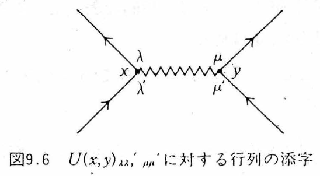
| Diagram element | Corresponding factor | How to read it |
|---|---|---|
| Solid line with an arrow $y\to x$ | $\ii G^0_{\alpha\beta}(x,y)$ ($\alpha$ is at the arrowhead, $\beta$ at the base) | Free propagation of a particle put in at $y$ (or of a hole created at $x$). A single line contains both time orderings, particle and hole |
| Wavy line $x_1$—$x_1'$ | $U(x_1,x_1')_{\lambda\lambda',\mu\mu'}=V\,\delta(t_1-t_1')$ | Instantaneous two-body interaction. Since the times are equal, it is drawn horizontally. One “incoming line” and one “outgoing line” are attached to each end (Figure C.1) |
| Vertex (black dot) $x_1$ | $\int\dd^4x_1$ and the sum over the spin indices of that vertex | The spacetime point where an interaction occurs. Both the position and the time are integrated over (which is why the vertical position carries no meaning) |
| Endpoints of the external lines $x,\ y$ | Not integrated over. They are the arguments of $G_{\alpha\beta}(x,y)$ | The point where the particle is put in and the point where it is taken out |
| Closed loop of solid lines | Factor $(-1)$, trace over spin | The sign of Fermi statistics. When the operators are rearranged using Wick's theorem, a contraction that forms a loop is always an odd permutation |
| A line whose start and end points coincide (equal time) | $\ii G^0_{\alpha\beta}(\xx t,\xx t^+)=-\bra{\Phi_0}\hat\psi^\dagger_\beta(\xx)\hat\psi_\alpha(\xx)\ket{\Phi_0}=-\delta_{\alpha\beta}\,n/(2s+1)$ | Because $\hat\psi^\dagger$ stands to the left of $\hat\psi$ in $\Ham_1$, this is interpreted as $t^+$ (F–W, Japanese edition, p. 102). In a uniform system it is given by the density $n$ ($n/(2s+1)$ per spin component) |
| The whole diagram of order $n$ | $(\ii/\hbar)^n(-1)^F$, $F$ = the number of loops | The coefficient that remains after $1/2$ and $1/n!$ have disappeared in Section C.4 |
With this, Eq. (9.1) of Fetter–Walecka becomes readable. Writing out the first-order term (Japanese edition, p. 101, Eq. (9.1); the symbols A–F under the terms correspond to the diagrams of Figure C.2), we obtain
$$ \begin{equation} \begin{aligned} \ii\tilde G^{(1)}_{\alpha\beta}(x,y)=\frac{-\ii}{\hbar}\,\frac12\sum_{\lambda\lambda'\mu\mu'}\int\!\dd^4x_1\dd^4x_1'\;U(x_1,x_1')_{\lambda\lambda',\mu\mu'}\Big\{ &\ii G^0_{\alpha\beta}(x,y)\big[\underbrace{\ii G^0_{\mu'\mu}(x_1',x_1')\,\ii G^0_{\lambda'\lambda}(x_1,x_1)}_{(A)} -\underbrace{\ii G^0_{\mu'\lambda}(x_1',x_1)\,\ii G^0_{\lambda'\mu}(x_1,x_1')}_{(B)}\big]\\ +\;&\ii G^0_{\alpha\lambda}(x,x_1)\big[\underbrace{\ii G^0_{\lambda'\mu}(x_1,x_1')\,\ii G^0_{\mu'\beta}(x_1',y)}_{(C)} -\underbrace{\ii G^0_{\lambda'\beta}(x_1,y)\,\ii G^0_{\mu'\mu}(x_1',x_1')}_{(D)}\big]\\ +\;&\ii G^0_{\alpha\mu}(x,x_1')\big[\underbrace{\ii G^0_{\mu'\lambda}(x_1',x_1)\,\ii G^0_{\lambda'\beta}(x_1,y)}_{(E)} -\underbrace{\ii G^0_{\mu'\beta}(x_1',y)\,\ii G^0_{\lambda'\lambda}(x_1,x_1)}_{(F)}\big]\Big\}. \end{aligned} \label{eq:C-FW91} \end{equation} $$The tilde on $\tilde G$ means “before dividing by the denominator $\bra{\Phi_0}\hat S\ket{\Phi_0}$” ($\ii G=\ii\tilde G/\bra{\Phi_0}\hat S\ket{\Phi_0}$).
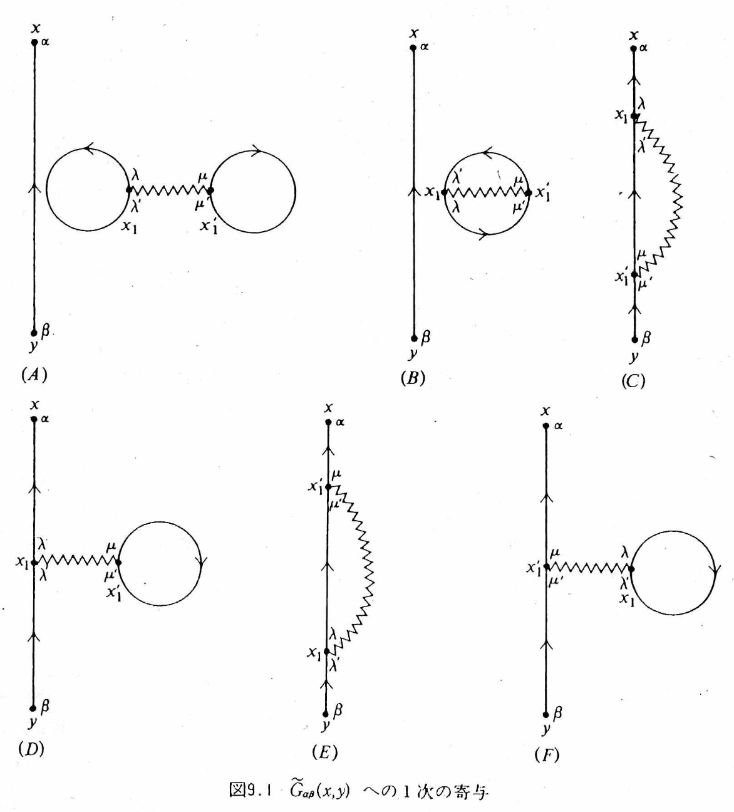
Derivation C.3: Translating the six diagrams of Figure C.2 into the six terms of Eq. \eqref{eq:C-FW91}
We read them one by one with the dictionary of Table C.2. Every diagram has one external line running “from $y$ to $x$” and one wavy line “$x_1$–$x_1'$”; the only difference is how the remaining two solid lines are connected.
- (A) $\ii G^0_{\alpha\beta}(x,y)$: the external line runs straight along $y\to x$. $\ii G^0_{\lambda'\lambda}(x_1,x_1)$ and $\ii G^0_{\mu'\mu}(x_1',x_1')$: loops at $x_1$ and at $x_1'$, each with start point = end point (equal time = density). A “dumbbell”: two densities joined by a wavy line. There are two loops, so the sign is $+$. The external-line part and the wavy-line part are not connected.
- (B) $\ii G^0_{\mu'\lambda}(x_1',x_1)\,\ii G^0_{\lambda'\mu}(x_1,x_1')$: the two lines $x_1\to x_1'$ and $x_1'\to x_1$ form a single loop (an “oyster”). There is one loop, so the sign is $-$. Again, it is not connected to the external line.
- (C) $\ii G^0_{\alpha\lambda}(x,x_1)\,\ii G^0_{\lambda'\mu}(x_1,x_1')\,\ii G^0_{\mu'\beta}(x_1',y)$: the external line passes through the two ends of the wavy line in turn, $y\to x_1'\to x_1\to x$. This is the exchange (Fock) term. There is no loop, and the sign is $+$.
- (D) $\ii G^0_{\alpha\lambda}(x,x_1)\,\ii G^0_{\lambda'\beta}(x_1,y)$ together with $\ii G^0_{\mu'\mu}(x_1',x_1')$: the external line passes through $x_1$ only, and a density loop is attached to $x_1'$. This is the direct (Hartree) term, the so-called tadpole. There is one loop, so the sign is $-$.
- (E), (F): obtained from (C) and (D) by interchanging $x_1\leftrightarrow x_1'$ (and, at the same time, $\lambda\leftrightarrow\mu$, $\lambda'\leftrightarrow\mu'$).
Let us check the sign of (C) with Wick's theorem. (C) consists of the contractions $\hat\psi_\alpha(x)\hat\psi^\dagger_\lambda(x_1)$, $\hat\psi_{\lambda'}(x_1)\hat\psi^\dagger_\mu(x_1')$, and $\hat\psi_{\mu'}(x_1')\hat\psi^\dagger_\beta(y)$. The number of transpositions required to rearrange the operator sequence $\hat\psi^\dagger_\lambda\hat\psi^\dagger_\mu\hat\psi_{\mu'}\hat\psi_{\lambda'}\hat\psi_\alpha\hat\psi^\dagger_\beta$ into the order $(\hat\psi_\alpha\hat\psi^\dagger_\lambda)(\hat\psi_{\lambda'}\hat\psi^\dagger_\mu)(\hat\psi_{\mu'}\hat\psi^\dagger_\beta)$, in which these three pairs are adjacent, is even (Exercise C.1). In (D), because $\hat\psi_{\mu'}\hat\psi^\dagger_\mu$ is made into a loop, the permutation is odd and a $-$ sign appears. “One factor of $-1$ per loop” is a generalization of this calculation.
C.4 First-Order Perturbation Theory — From Six Terms to Two Diagrams (Figures C.2–C.7)
C.4.1 Disconnected diagrams cancel against the denominator
(A) and (B) are products of a “free external line” and a “closed diagram unrelated to the external lines (a vacuum bubble).” Because the integration variables $x_1,x_1'$ appear only in the closed part, (A)+(B) factorizes as $\ii G^0_{\alpha\beta}(x,y)\times[\text{const}]$. This factorization holds at all orders (Figure C.3). On the other hand, if we expand the denominator $\bra{\Phi_0}\hat S\ket{\Phi_0}$ with the same Wick's theorem, precisely this sum of vacuum bubbles appears (Figure C.4).
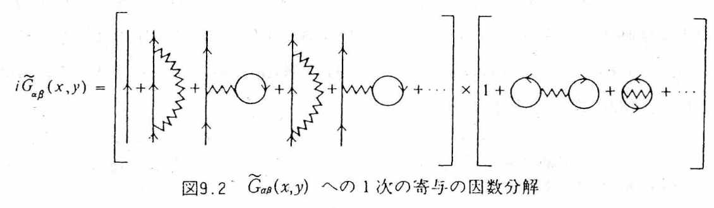
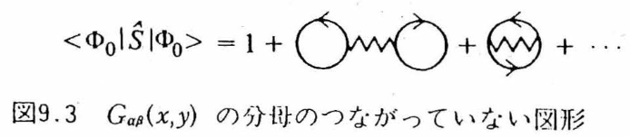
Theorem C.1 (Linked-cluster theorem)
$\ii G_{\alpha\beta}(x,y)=\ii\tilde G_{\alpha\beta}(x,y)/\bra{\Phi_0}\hat S\ket{\Phi_0}$ is equal to the sum of only those diagrams that are connected to the external points $x,y$. All vacuum bubbles (diagrams having parts not connected to the external lines, such as the one in Figure C.5) cancel against the denominator and disappear.
Physically this is only natural. A vacuum bubble is “a fluctuation of the ground state that goes on even when no particle has been added,” and $\bra{\Phi_0}\hat S\ket{\Phi_0}$ is itself the Gell-Mann–Low phase factor (Chapter 6). Only the difference made by adding the particle remains in $G$.
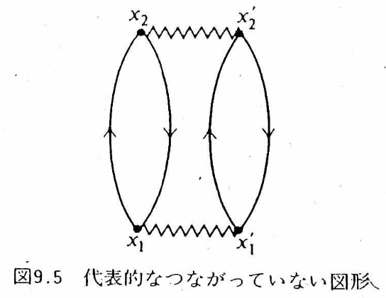
C.4.2 The factors $1/2$ and $1/n!$ disappear
(C) and (E) take the same value when the names of the integration variables $x_1\leftrightarrow x_1'$ (and the corresponding spin indices) are interchanged. The symmetry of the interaction, $U(x_1,x_1')_{\lambda\lambda',\mu\mu'}=U(x_1',x_1)_{\mu\mu',\lambda\lambda'}$, guarantees this. The same holds for (D) and (F). Therefore (C)+(E)$=2\times$(C) and (D)+(F)$=2\times$(D), and the leading $1/2$ in Eq. \eqref{eq:C-FW91} disappears. At order $n$, interchanging the two ends of each of the $n$ wavy lines gives $2^n$, and relabeling the $n$ factors of $\Ham_1$ (Figure C.6) gives $n!$; together these exactly cancel $\frac{1}{n!}\big(\frac12\big)^n$.
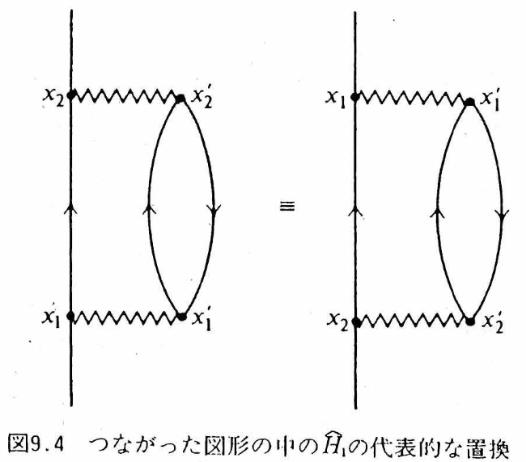
We now summarize the results so far in a table for the six diagrams of Figure C.2. Please do not forget that the “representative story” in each row is merely one time ordering for the sake of intuition; in reality the integration is carried out over all internal times and all internal coordinates (the caution in Section C.2).
| Diagram | How the lines connect | Representative story | Connection to the external lines | What becomes of it |
|---|---|---|---|---|
| (A) | A “dumbbell”: two equal-time density loops joined by a wavy line | The two densities of the electron sea interact directly through the Coulomb interaction (the Hartree energy of the ground state) | Disconnected | Cancels against the denominator and disappears |
| (B) | Two lines form a single closed loop (an “oyster”) | Exchange amplitude between occupied electrons of the electron sea (the Fock energy of the ground state) | Disconnected | Cancels against the denominator and disappears |
| (C) | The external line passes in turn through the two ends of the wavy line | The added electron exchanges with an occupied electron of the electron sea | Connected | Combined with (E), it gives $2\times$, which cancels the $1/2$ → Figure C.7(b) |
| (D) | The external line passes through only one vertex, and a density loop (tadpole) sits at the other | The added electron feels the Coulomb potential created by the average density of the electron sea | Connected | Combined with (F), it gives $2\times$ → Figure C.7(a) |
| (E) | (C) with $x_1\leftrightarrow x_1'$ interchanged | Same as (C) | Connected | Same value as (C) |
| (F) | (D) with $x_1\leftrightarrow x_1'$ interchanged | Same as (D) | Connected | Same value as (D) |
(A) and (B) “disappear” not because there is no physics in them. They are the energy and phase of the ground state, which exist even if not a single particle is added, and since $G$ describes “the difference made by adding a particle,” they are divided out as a common factor.
C.4.3 The first-order result and the Feynman rules
From the above, the first-order Green's function is exhausted by two topologically distinct connected diagrams (Figure C.7), and after organizing the factors of $\ii$ we obtain
$$ \begin{equation} G^{(1)}_{\alpha\beta}(x,y)=\frac{\ii}{\hbar}\sum\int\!\dd^4x_1\dd^4x_1'\; G^0_{\alpha\lambda}(x,x_1)\,U(x_1,x_1')_{\lambda\lambda',\mu\mu'} \Big[\underbrace{G^0_{\lambda'\mu}(x_1,x_1')\,G^0_{\mu'\beta}(x_1',y)}_{\text{exchange (b)}} -\underbrace{G^0_{\lambda'\beta}(x_1,y)\,G^0_{\mu'\mu}(x_1',x_1'^{\,+})}_{\text{direct (a)}}\Big]. \label{eq:C-G1} \end{equation} $$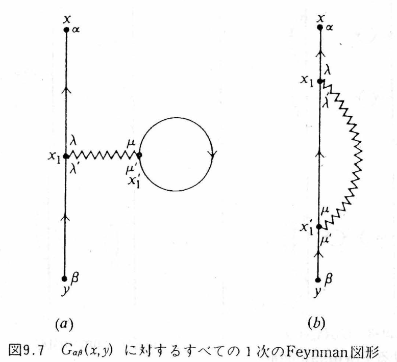
Derivation C.4: The direct term becomes the Hartree potential
We insert the spin-independent interaction $U=V(\xx_1-\xx_1')\delta(t_1-t_1')\delta_{\lambda\lambda'}\delta_{\mu\mu'}$ and the equal-time rule $\ii G^0_{\mu'\mu}(x_1',x_1'^{+})=-\delta_{\mu'\mu}n/(2s+1)$ into the direct term of Eq. \eqref{eq:C-G1}. Using the spin sum $\sum_{\mu\mu'}\delta_{\mu\mu'}\delta_{\mu'\mu}=2s+1$, we obtain
$$ G^{(1a)}_{\alpha\beta}(x,y)=\frac{\ii}{\hbar}\cdot(-1)\cdot\Big(\ii\,\frac{n}{2s+1}\Big)(2s+1)\int\!\dd^4x_1\,G^0_{\alpha\beta}(x,x_1)\Big[\int\!\dd^3x_1'\,V(\xx_1-\xx_1')\Big]G^0(x_1,y) =\int\!\dd^4x_1\,G^0_{\alpha\beta}(x,x_1)\,\frac{nV(\qq=0)}{\hbar}\,G^0(x_1,y). $$That is, the direct term is a correction in which “the static potential $nV(0)$ created by the average density $n$ is felt once.” This is the Hartree potential. The exchange term can be computed in the same way (Section C.5, Eq. \eqref{eq:C-Sig1}), and the first-order energy correction obtained by combining the two is Hartree–Fock itself. The Hartree–Fock approximation means stopping at first order in the Feynman diagrams.
Easily Misunderstood Point: The Hartree and Fock terms do not differ as earlier versus later in time
If we read Figure C.7 following the instruction “vertical axis = time,” it is easy to fall into the following way of reading it.
“Because the wavy line is horizontal, the tadpole in (a) occurs only when a certain time arrives. In the Fock term in (b), the wavy line is slanted, so electrons of the past and of the future are interacting.”
Neither is correct. The reason is precisely the caution in Section C.2.
- The times of the internal vertices $x_1,x_1'$ are all integrated over. An event that “occurs at a certain time” is written nowhere in the diagram. What the closed loop of the tadpole represents is the equal-time density $n(\xx_1')$, not an event that takes place at one particular time.
- The two ends of a wavy line are always at the same time ($U\propto\delta(t_1-t_1')$). That the wavy line is drawn slanted in (b) is merely a matter of drawing convenience, and it is not an interaction connecting the past and the future.
Then how do (a) and (b) differ? It is not time but the way the lines are connected (direct or exchange) that differs.
| (a) Direct term = Hartree | (b) Exchange term = Fock | |
|---|---|---|
| Fact about the diagram | The external line passes only through the vertex $x_1$, and a closed loop is attached to $x_1'$ | The external line passes in turn through the two ends $x_1$, $x_1'$ of the wavy line |
| Self-energy | $\Sigma_H(\xx)=\displaystyle\int\!\dd^3x'\,V(\xx-\xx')\,n(\xx')$ | $\Sigma_{F,\alpha\beta}(\xx,\xx')=-V(\xx-\xx')\,\rho_{\alpha\beta}(\xx,\xx')$ |
| Physics | The added electron feels the Coulomb potential created by the average density of the electron sea | An exchange potential arising from the antisymmetry of identical fermions. Because name tags cannot be attached to the added electron and the occupied electrons, the interchanged amplitude is added with a sign $-$ |
| Fermion loop | One (sign $-$) | None (sign $+$) |
| Nonlocality | Local in $\xx$ (a multiplication operator) | A nonlocal operator connecting the two points $\xx,\xx'$ |
Here $\rho_{\alpha\beta}(\xx,\xx')=\braket{\hat\psi^\dagger_\beta(\xx')\hat\psi_\alpha(\xx)}$ is the one-body density matrix. Both are first-order contributions of the same instantaneous bare Coulomb interaction, and the difference is not one of earlier versus later. Whether it is direct or exchange—that is all there is to it. (That the exchange term is nonlocal is directly tied to the motivation, in Chapter 14, for taking $V^{\rm eff}$ to be nonlocal.)
Generalizing this procedure gives the Feynman rules. We list them following Fetter–Walecka, Japanese edition, Section 9.
Definition C.1: Feynman rules in coordinate space ($n$th-order contribution to $G_{\alpha\beta}(x,y)$)
- Draw all connected, topologically distinct diagrams having $n$ interaction lines (wavy lines) and $2n+1$ directed Green's function lines (solid lines).
- Assign a space-time point $x_i$ to each vertex. To each solid line assign $G^0_{\alpha\beta}(x,y)$ ($y\to x$), and to each wavy line assign $U(x,y)_{\lambda\lambda',\mu\mu'}$.
- Integrate over all internal space-time points and sum over all internal spin indices.
- Multiply by $(-1)^F$, where $F$ is the number of closed fermion loops.
- Multiply the whole by $(\ii/\hbar)^n$.
- A solid line whose initial and final times are equal is interpreted as $G^0(\xx t,\xx t^+)$.
C.5 Momentum Space and Second-Order Perturbation Theory — The Ten Diagrams of $G^{(2)}$ (Figures C.8–C.12)
C.5.1 The Feynman rules in momentum space
In a uniform system, $G^0(x,y)=G^0(x-y)$ and $U(x,y)=U(x-y)$, and the four-dimensional Fourier transform $G^0(x-y)=\intk{k}\,\ee^{\ii k\cdot(x-y)}G^0(k)$ ($k\cdot x\equiv\kk\cdot\xx-\omega t$) simplifies the integrals. At each internal vertex, the factor $\ee^{\ii q\cdot x}$ of the “incoming line,” the factor $\ee^{-\ii q'\cdot x}$ of the “outgoing line,” and the factor $\ee^{\ii q''\cdot x}$ of the wavy line come together, and the $x$ integral gives $(2\pi)^4\delta^{(4)}(q-q'+q'')$ (Figure C.8; Japanese edition, Eq. (9.13)). That is, four-momentum (momentum and energy) is conserved at every vertex. At the two end points $x,y$, the relation $q''=q'$ remains, and this becomes the factor $\ee^{\ii q'\cdot(x-y)}$ of the Fourier transform of $G(x-y)$ (Figure C.9).
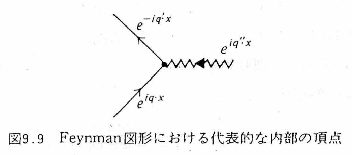
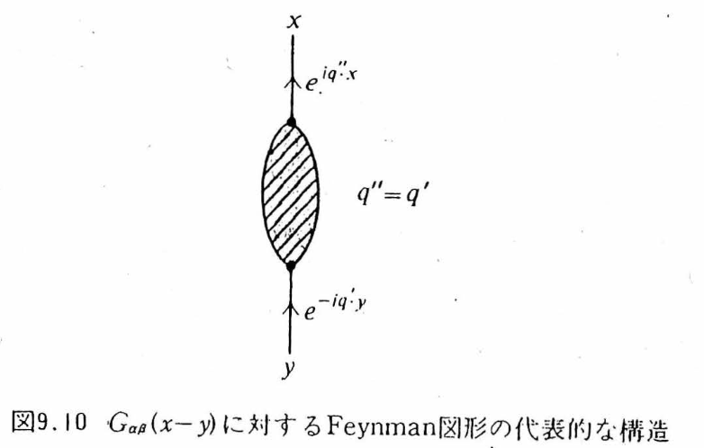
Definition C.2: Feynman rules in momentum space (the $n$th-order contribution to $G_{\alpha\beta}(\kk,\omega)\equiv G_{\alpha\beta}(k)$)
- Draw all connected, topologically distinct diagrams with $n$ wavy lines and $2n+1$ directed solid lines.
- Assign a direction to each wavy line, assign a directed four-momentum to each line, and conserve four-momentum at each vertex.
- To each solid line assign $G^0_{\alpha\beta}(k)=\delta_{\alpha\beta}\Big[\dfrac{\theta(k-k_F)}{\omega-\omega_\kk+\ii\eta}+\dfrac{\theta(k_F-k)}{\omega-\omega_\kk-\ii\eta}\Big]$ (Japanese edition, Eq. (9.14)), and to each wavy line assign $U(q)_{\lambda\lambda',\mu\mu'}=V(\qq)_{\lambda\lambda',\mu\mu'}$ (the instantaneous interaction does not depend on the frequency).
- For the $n$ independent internal four-momenta, carry out $\intk{k_i}$, and sum over the internal spin indices.
- Multiply by $(\ii/\hbar)^n(-1)^F$.
- To a solid line that closes on itself, or a solid line that joins the two ends of the same wavy line, attach the convergence factor $\ee^{\ii\omega\eta}$ (the momentum-space version of the equal-time $t^+$ rule).
Applying these rules to the two first-order diagrams (Figure C.10), we obtain Fetter–Walecka, Japanese edition, Eq. (9.15):
$$ \begin{equation} \begin{aligned} G^{(1)}_{\alpha\beta}(k) &=\ii\hbar^{-1}(-1)\intk{k_1}\,G^0_{\alpha\lambda}(k)\,U(0)_{\lambda\lambda',\mu\mu'}\,G^0_{\lambda'\beta}(k)\,G^0_{\mu'\mu}(k_1)\,\ee^{\ii\omega_1\eta} +\ii\hbar^{-1}\intk{k_1}\,G^0_{\alpha\lambda}(k)\,U(k-k_1)_{\lambda\lambda',\mu\mu'}\,G^0_{\lambda'\mu}(k_1)\,G^0_{\mu'\beta}(k)\,\ee^{\ii\omega_1\eta}\\ &=\ii\hbar^{-1}G^0(k)\Big\{\intk{k_1}\big[-U(0)_{\alpha\beta,\mu\mu}G^0(k_1)\ee^{\ii\omega_1\eta}+U(k-k_1)_{\alpha\mu,\mu\beta}G^0(k_1)\ee^{\ii\omega_1\eta}\big]\Big\}G^0(k). \end{aligned} \label{eq:C-FW915} \end{equation} $$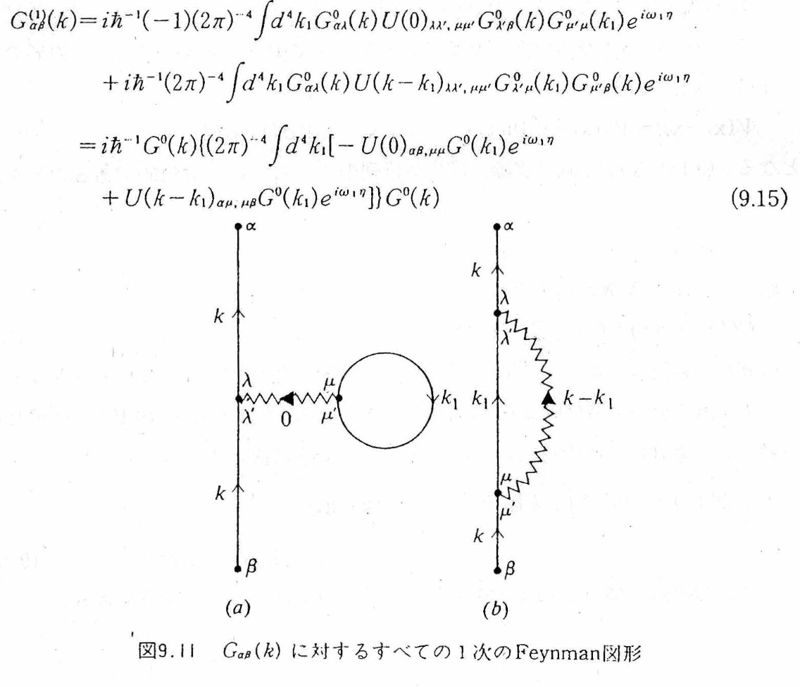
Derivation C.5: The frequency integral of Eq. \eqref{eq:C-FW915} — the first-order proper self-energy
Since $\ee^{\ii\omega_1\eta}$ ($\eta\to0^+$) decays in the upper half-plane, we close the $\omega_1$ integral in the upper half-plane. In Eq. \eqref{eq:C-G0}, the only part with a pole in the upper half-plane is the hole part $\theta(k_F-k_1)/(\omega_1-\omega_{\kk_1}-\ii\eta)$, so by the residue theorem (Chapter 5)
$$ \int\!\frac{\dd\omega_1}{2\pi}\,G^0(k_1)\,\ee^{\ii\omega_1\eta}=\ii\,\theta(k_F-k_1),\qquad \intk{k_1}\,G^0(k_1)\,\ee^{\ii\omega_1\eta}=\ii\int\!\frac{\dd^3k_1}{(2\pi)^3}\theta(k_F-k_1)=\ii\,\frac{n}{2s+1}. $$For a spin-independent interaction $U(q)_{\lambda\lambda',\mu\mu'}=V(\qq)\delta_{\lambda\lambda'}\delta_{\mu\mu'}$, we have $U(0)_{\alpha\beta,\mu\mu}=(2s+1)V(0)\delta_{\alpha\beta}$ and $U(k-k_1)_{\alpha\mu,\mu\beta}=V(\kk-\kk_1)\delta_{\alpha\beta}$, so the $[\cdots]$ part is
$$ \begin{equation} \Sig_{(1)}(\kk)=\frac{\ii}{\hbar}\intk{k_1}\big[-(2s+1)V(0)+V(\kk-\kk_1)\big]G^0(k_1)\ee^{\ii\omega_1\eta} =\frac{1}{\hbar}\Big[nV(0)-\int\!\frac{\dd^3k_1}{(2\pi)^3}V(\kk-\kk_1)\,\theta(k_F-k_1)\Big]. \label{eq:C-Sig1} \end{equation} $$The first term is the Hartree term, and the second is the exchange (Fock) term. $\epsilon^{(1)}_\kk=\epsilon^0_\kk+\hbar\Sig_{(1)}(\kk)$ is nothing other than the Hartree–Fock one-particle energy (Section C.6.3; Japanese edition, Eq. (9.35)). Note that it does not depend on the frequency (it is static): no lifetime arises at first order ($\mathrm{Im}\,\Sig_{(1)}=0$).
C.5.2 Second-order perturbation theory: the ten diagrams
At second order there are two wavy lines and five solid lines. There are ten topologically distinct connected diagrams (Figure C.11). They are the result of counting with Wick's theorem: of the $5!=120$ contractions, we remove the disconnected ones and identify those that are equivalent under relabeling.
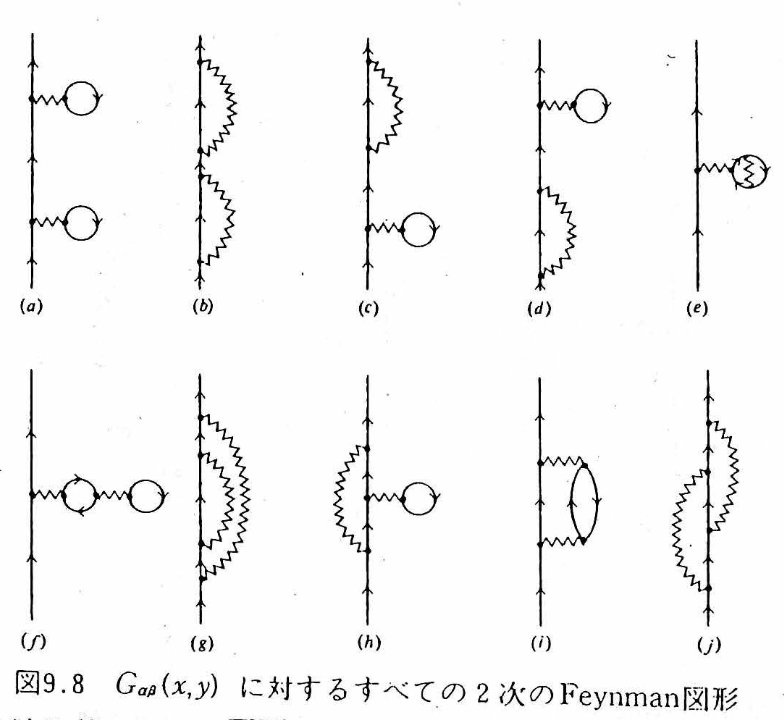
The ten fall into two types. (a)–(d) are diagrams that “split into two when one solid line is cut,” and they are nothing more than the first-order block $\Sig_{(1)}$ used twice. (e)–(j) do not split even when one solid line is cut—these are the six that make up the second-order proper self-energy $\Sig_{(2)}$, and they are the same as (a)–(f) of Figure C.12 (correspondence: Figure C.11(e)→Figure C.12(a), (f)→(b), (g)→(c), (h)→(d), (i)→(e), (j)→(f)).
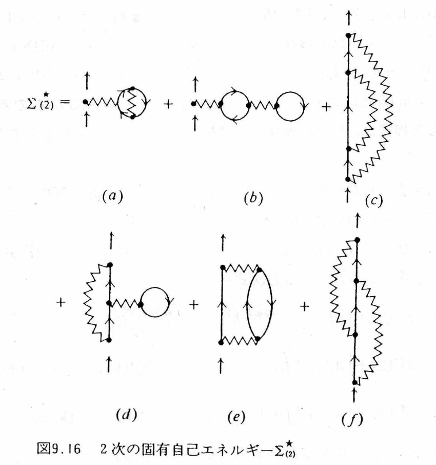
Let us read the ten one by one. If we give them names, then when we later discuss approximations to $\Sig$, we will be able to say in words “which diagrams to keep.”
| Figure C.11 | Name | Representative story | Reducibility | Figure C.12 |
|---|---|---|---|---|
| (a) | Hartree–Hartree | The added electron feels the average Hartree field, propagates freely, and feels the Hartree field once more: $G^0\Sigma_HG^0\Sigma_HG^0$ | Reducible (cutting one external line splits the diagram into two) | — ($\Sig_{(1)}$ in series) |
| (b) | Fock–Fock | It undergoes exchange, propagates, and undergoes exchange once more: $G^0\Sigma_FG^0\Sigma_FG^0$ | ||
| (c) | H–F mixed 1 | One Hartree field and one Fock exchange, connected in this order | ||
| (d) | H–F mixed 2 | The reverse order of connection from (c) | ||
| (e) | Tadpole with exchange | An electron inside the density loop that creates the Hartree field is itself exchanging with yet another occupied electron. The Hartree field created by the exchange-corrected density | Proper (does not split when cut) | (a) |
| (f) | Tadpole of a tadpole | A nesting in which the density loop that creates the Hartree field itself receives a Hartree field from yet another density loop | (b) | |
| (g) | Rainbow (exchange inside an exchange) | The internal electron line that carries the Fock exchange itself undergoes a further exchange on its way. Unlike (b), it is the internal line, not the external line, that has been re-dressed | (c) | |
| (h) | Exchange with a tadpole | The internal electron line of the Fock exchange feels the Hartree mean field of the electron sea | (d) | |
| (i) | Polarization-loop insertion (seed of GW) | The added electron hands $(\qq,\omega)$ to the electron sea → an electron below the Fermi surface is excited upward, leaving a hole → the particle–hole pair (polarization cloud) propagates → the pair recombines, and the back-reaction returns to the electron | (e) | |
| (j) | Crossed exchange (seed of the vertex correction) | The electron emits the wavy line $q$, then emits $q'$, absorbs $q$ first, and finally absorbs $q'$. The two exchange histories interfere, with the sign taken into account | (f) |
Caution: Do not mix up the correspondence between the labels of Figure C.11 and Figure C.12
Both figures carry the labels (a)–(f), so it is easy to get confused. What is called the “body of the correlation” is (e) and (f) of Figure C.12, that is, (i) and (j) of Figure C.11. (e) and (f) of Figure C.11 are nothing more than a rearrangement of the static structure, obtained by simply re-dressing the internal lines of the Hartree/Fock diagrams with Hartree/Fock insertions. Below, the subscripts in Eq. \eqref{eq:C-Sig2} are matched to Figure C.12 ($\Sig_{(2a)}$ through $\Sig_{(2f)}$), so use the rightmost column of Table C.4 to convert between the two sets of labels.
The second-order Green's function (momentum space, spin-independent interaction)
$$ \begin{equation} G^{(2)}(k)=G^0(k)\Big[\Sig_{(1)}(\kk)\,G^0(k)\,\Sig_{(1)}(\kk)+\Sig_{(2)}(k)\Big]G^0(k),\qquad \Sig_{(2)}=\Sig_{(2a)}+\Sig_{(2b)}+\Sig_{(2c)}+\Sig_{(2d)}+\Sig_{(2e)}+\Sig_{(2f)}. \label{eq:C-G2} \end{equation} $$Expanding the first term gives the four combinations of $\Sig_{(1)}=\Sigma_H+\Sigma_x$ (Figure C.11 (a)–(d)). The six pieces of the second term, from the rules of Definition C.2 ($g\equiv2s+1$, so $g=2$ for electrons; $\omega_p$ is the frequency component of the four-momentum $p$), are
$$ \begin{equation} \begin{aligned} \Sig_{(2a)}(k)&=\Big(\frac{\ii}{\hbar}\Big)^2(-g)\,V(0)\intk{p}\intk{p'}\,V(\pp-\pp')\,[G^0(p)]^2\,G^0(p')\,\ee^{\ii\omega_p\eta}\ee^{\ii\omega_{p'}\eta},\\ \Sig_{(2b)}(k)&=\Big(\frac{\ii}{\hbar}\Big)^2(-g)^2\,[V(0)]^2\intk{p}\,[G^0(p)]^2\,\ee^{\ii\omega_p\eta}\intk{p'}\,G^0(p')\,\ee^{\ii\omega_{p'}\eta},\\ \Sig_{(2c)}(k)&=\Big(\frac{\ii}{\hbar}\Big)^2\intk{p}\intk{p'}\,V(\kk-\pp)\,V(\pp-\pp')\,[G^0(p)]^2\,G^0(p')\,\ee^{\ii\omega_{p'}\eta},\\ \Sig_{(2d)}(k)&=\Big(\frac{\ii}{\hbar}\Big)^2(-g)\,V(0)\intk{p}\intk{p'}\,V(\kk-\pp)\,[G^0(p)]^2\,G^0(p')\,\ee^{\ii\omega_{p'}\eta},\\ \Sig_{(2e)}(k)&=\Big(\frac{\ii}{\hbar}\Big)^2(-g)\intk{q}\intk{p}\,[V(\qq)]^2\,G^0(k-q)\,G^0(p)\,G^0(p+q),\\ \Sig_{(2f)}(k)&=\Big(\frac{\ii}{\hbar}\Big)^2\intk{q}\intk{q'}\,V(\qq)\,V(\qq')\,G^0(k-q)\,G^0(k-q-q')\,G^0(k-q'). \end{aligned} \label{eq:C-Sig2} \end{equation} $$As for how each expression is constructed, let us trace just one. (e): The external line $k$ emits a wavy line $q$ at a vertex and becomes $G^0(k-q)$. The wavy line $q$ enters the loop, and the loop consists of the two lines $G^0(p)$ and $G^0(p+q)$ ($p+q$ is conserved at the vertex). Another wavy line $q$ leaves the loop and returns to the external line, and $G^0(k-q)$ goes back to $k$. The two wavy lines give $[V(\qq)]^2$, the one loop gives $-g$, there are two independent internal momenta, $q,p$, and we have the factor $(\ii/\hbar)^2$. (f): The external line emits a wavy line $q$ ($k-q$), further emits a wavy line $q'$ ($k-q-q'$), first absorbs $q$ ($k-q'$), and finally absorbs $q'$ to return to $k$. The two wavy lines cross because of this order, “the one emitted first is absorbed later,” and there is no loop. The remaining four can be written down by the same rules if we read each as “a first-order block ($\Sigma_H$ or $\Sigma_x$) inserted into an internal line of a first-order diagram” (Exercise C.3).
Supplement: On the absence of an expression for $\Sig_{(2)}$ in Fetter–Walecka
Fetter–Walecka only draw Figure C.12 and do not write down the expressions. Eq. \eqref{eq:C-Sig2} was written down in this appendix by applying the rules of Definition C.2 mechanically. The same second-order self-energy appears, together with its diagrams, in Mattuck's introductory textbook (Chapter 10) and in Mahan (Chapter 5, the second-order Born approximation and the second-order exchange term); in addition, in the field of quantum chemistry, explicit expressions in the form expanded in a basis set are given in papers under the name “GF2” (N. E. Dahlen and R. van Leeuwen, J. Chem. Phys. 122, 164102 (2005); J. J. Phillips and D. Zgid, J. Chem. Phys. 140, 241101 (2014)). These are written in imaginary time (the Matsubara formalism of Chapter 13), and are free of the nuisance of $\ee^{\ii\omega\eta}$. If readers wish to check the results themselves, it is a good idea to start with the two terms $\Sig_{(2e)}$ and $\Sig_{(2f)}$ of Eq. \eqref{eq:C-Sig2} (Figure C.12 (e) and (f) = Figure C.11 (i) and (j); these are the body of the “correlation”).
Physical Note: What happens with the Coulomb interaction
The labels (a)–(f) below are those of Eq. \eqref{eq:C-Sig2}, that is, of Figure C.12 (in Figure C.11 they correspond to (e), (f), (g), (h), (i), (j), in that order). (1) Diagrams (a), (b), (d), which contain $V(0)$, and the first-order Hartree term cancel against the uniform positive charge background in the jellium model and vanish (Appendix B, Section B.6). (2) Diagram (e) diverges at small $q$ for $V(\qq)=4\pi e^2/q^2$, because $[V(\qq)]^2\sim q^{-4}$ while the polarization loop is finite as $q\to0$. The divergence disappears only when the diagrams of type (e) (“ring” diagrams, in which loops are inserted one after another into a wavy line) are summed to infinite order—this is the RPA (random-phase approximation; Section C.7), and including in addition the dressing of G gives the GW approximation (Section C.8). (3) Diagram (f) is finite and gives the remainder of the second-order “exchange–correlation.” (4) Diagrams (e) and (f) depend on frequency and have an imaginary part. Here, for the first time, a lifetime $\gamma_\kk$ arises. The factor $(\epsilon_\kk-\epsilon_F)^2$ in Eq. \eqref{eq:C-FL} follows from evaluating the imaginary part of (e) near the Fermi surface. (5) Conversely, (a)–(d) of Figure C.11 ($\Sig_{(1)}$ connected in series) and (e)–(h) (Hartree/Fock dressing of the internal lines) do not produce a lifetime, however many of them are stacked. As long as $\Sigma_H$ and $\Sigma_F$ are real and independent of frequency, $\Im\Sig=0$ remains no matter how many of them are lined up (the reason is given in Section C.6.4). The levels and orbitals change, but the linewidth is $0$.
C.6 The Dyson Equation — $\Sigma$ and $\Sig$, the Bookkeeping of Renormalization and Lifetime (Figures C.13–C.17)
C.6.1 The self-energy $\Sigma$ and the proper self-energy $\Sig$
In a diagram of any order, if we remove the external lines $G^0(x,x_1)$ and $G^0(x_1',y)$ at both ends, a “blob running from $x_1$ to $x_1'$” remains (Figure C.13). The sum of these blobs is called the self-energy $\Sigma_{\lambda\mu}(x_1,x_1')$:
$$ \begin{equation} G_{\alpha\beta}(x,y)=G^0_{\alpha\beta}(x,y)+\int\!\dd^4x_1\dd^4x_1'\;G^0_{\alpha\lambda}(x,x_1)\,\Sigma_{\lambda\mu}(x_1,x_1')\,G^0_{\mu\beta}(x_1',y). \label{eq:C-Sigma} \end{equation} $$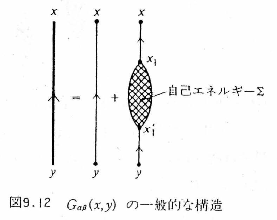
The blobs summed in $\Sigma$ include some, such as (a)–(d) of Figure C.11, that “fall into two pieces when one solid line is cut.” The collection of only those that do not fall apart when cut is called the proper self-energy $\Sig$. Then $\Sigma$ becomes a series of $\Sig$ connected by $G^0$ (Figure C.14, Japanese edition, Eq. (9.26)):
$$ \begin{equation} \Sigma(x_1,x_1')=\Sig(x_1,x_1')+\int\!\dd^4x_2\dd^4x_2'\,\Sig(x_1,x_2)G^0(x_2,x_2')\Sig(x_2',x_1') +\int\!\!\int\Sig\,G^0\,\Sig\,G^0\,\Sig+\cdots. \label{eq:C-FW926} \end{equation} $$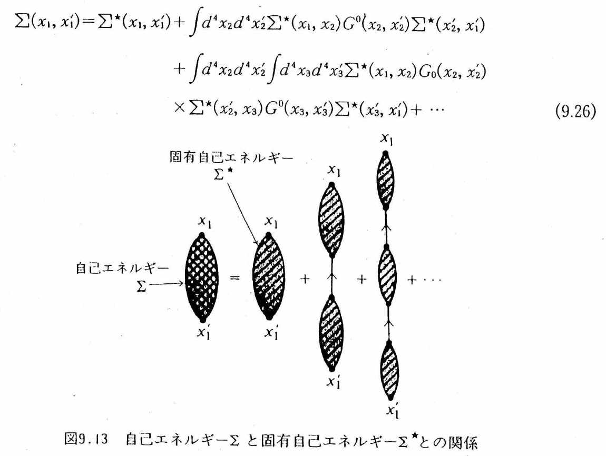
Caution: Do not confuse $\Sigma$ with $\Sig$
The right-hand side of Eq. \eqref{eq:C-Sigma} is $G^0\,\Sigma\,G^0$ (thin lines on both sides), and $\Sigma$ is the sum including even the “reducible” blobs. On the other hand, what is simply called the “self-energy” in many textbooks and papers, and what enters the Dyson equation $G=G^0+G^0\Sigma G$, is the proper self-energy $\Sig$. Fetter–Walecka distinguish the symbols $\Sigma$ and $\Sig$, but in Mahan and in Hedin's papers one writes $\Sigma$ and means the proper self-energy. From Section C.8 on, this appendix also follows common practice and writes the proper self-energy as $\Sigma$.
C.6.2 The Dyson equation
Substituting Eq. \eqref{eq:C-FW926} into Eq. \eqref{eq:C-Sigma} gives $G=G^0+G^0\Sig G^0+G^0\Sig G^0\Sig G^0+\cdots$, and the second and subsequent terms on the right-hand side combine as $G^0\Sig\,(G^0+G^0\Sig G^0+\cdots)=G^0\Sig G$ (Figure C.15):
$$ \begin{equation} G_{\alpha\beta}(x,y)=G^0_{\alpha\beta}(x,y)+\int\!\dd^4x_1\dd^4x_1'\;G^0_{\alpha\lambda}(x,x_1)\,\Sig_{\lambda\mu}(x_1,x_1')\,G_{\mu\beta}(x_1',y). \label{eq:C-Dyson} \end{equation} $$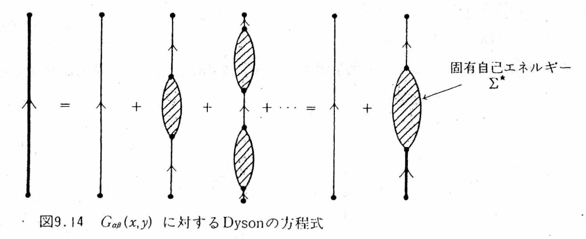
In a uniform system the convolution becomes a product (when $G^0$ and $\Sig$ do not depend on spin)
$$ \begin{equation} G(k)=G^0(k)+G^0(k)\Sig(k)G(k)\quad\Longrightarrow\quad G(\kk,\omega)=\frac{1}{[G^0(\kk,\omega)]^{-1}-\Sig(\kk,\omega)}=\frac{1}{\omega-\omega_\kk-\Sig(\kk,\omega)}. \label{eq:C-Dysonk} \end{equation} $$With this we are back at Eq. \eqref{eq:C-QPeq} of Section C.1.3. The poles of $G$ are the solutions of $\omega=\omega_\kk+\Sig(\kk,\omega)$, and $\mathrm{Re}\,\Sig$ gives the renormalization and $\mathrm{Im}\,\Sig$ gives the lifetime. If we stop $\Sig$ at first order (Figure C.16), we get Hartree–Fock; if we go to second order (Figure C.12), the second-order Born approximation; and if we sum the diagrams of type (e) to infinite order, the GW approximation. Feynman diagrams are nothing other than a language that declares in pictures where we cut off the calculation of $\Sig$.
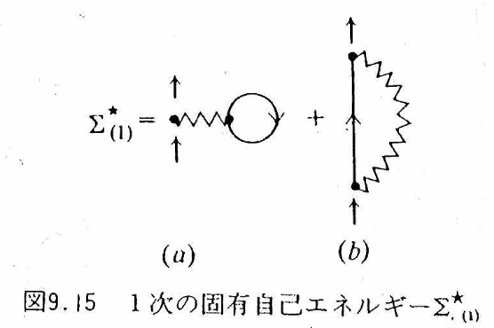
C.6.3 The simplest approximation: $\Sig\simeq\Sig_{(1)}$ (Hartree–Fock)
Substituting $\Sig\simeq\Sig_{(1)}$ into the Dyson equation, $G$ becomes an infinite sum of diagrams “in which tadpoles and exchanges are lined up in any order and in any number,” as in Figure C.17. Since $\Sig_{(1)}$ is static (independent of frequency), the poles of $G$ stay on the real axis, and the one-particle energy shifts to
$$ \begin{equation} \epsilon^{(1)}_\kk=\epsilon^0_\kk+\hbar\Sig_{(1)}(\kk) =\frac{\hbar^2k^2}{2m}+nV_0(0)-(2\pi)^{-3}\int\!\dd^3k'\,\big[V_0(\kk-\kk')+3V_1(\kk-\kk')\big]\theta(k_F-k') \label{eq:C-FW935} \end{equation} $$(Japanese edition, Eq. (9.35). Fetter–Walecka assume a spin-dependent potential $V=V_0+V_1\,\bm\sigma_1\!\cdot\!\bm\sigma_2$, and for the electron gas $V_1=0$.) Only renormalization occurs, and the lifetime is infinite—the same situation as for the anharmonic oscillator of Section C.1.4.
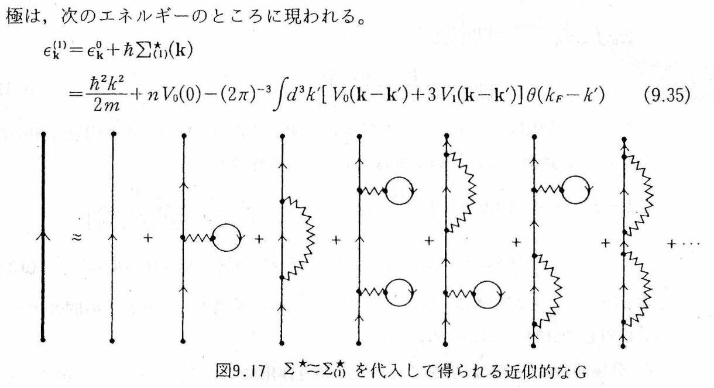
C.6.4 $\delta(t-t')$, “static,” and “infinite lifetime” — distinguishing the three
In Section C.6.3 we wrote “$\Sig_{(1)}$ is static, so the lifetime is infinite.” This is a short line, but it is where beginners stumble most, so we take it apart carefully. Writing the Hartree–Fock self-energy in the time representation, the Fock term, for example, takes the form
$$ \begin{equation} \Sigma_F(\xx t,\xx't')=-\,\delta(t-t')\,V(\xx-\xx')\,\rho(\xx,\xx') \label{eq:C-SigF-time} \end{equation} $$Seeing this $\delta(t-t')$, one is apt to read it as saying, “Is the self-energy generated only at the single instant $t=t'$?” That is not so.
(1) “Instantaneous” means having no memory
The self-energy is actually used inside the convolution of the Dyson equation:
$$ \int\!\dd t'\;\Sigma(t,t')\,G(t',t_0). $$Substituting Eq. \eqref{eq:C-SigF-time} here, the $\delta$ function collapses the $t'$ integral, giving
$$ \int\!\dd t'\;\delta(t-t')\,\Sigma_{HF}\,G(t',t_0)=\Sigma_{HF}\,G(t,t_0) $$The $t$ on the left-hand side is a variable that runs over all times. Therefore what this equation says is not that “the self-energy exists only once in history,” but that “at every time $t$, it acts only on the state at that same time and does not refer to the past history.” We say that it is local in time, or memoryless.
(2) “Static” means being independent of frequency
Taking the Fourier transform with respect to the time difference $\tau=t-t'$ (Appendix A), since $\delta(\tau)\leftrightarrow 1$, a self-energy that is local in time becomes
$$ \Sig_{HF}(\omega)=\Sig_{HF}\qquad(\omega\ \text{independent}) $$“Static” does not mean “because we have integrated over time”; it refers to the absence of frequency dependence. That $\Sig(\omega)$ does not depend on $\omega$ also means that $Z_\kk=[1-\partial\Re\Sig/\partial\omega]^{-1}=1$ in Eq. \eqref{eq:C-QPeq}: in Hartree–Fock the quasiparticle weight stays equal to 1, and no satellites arise either.
(3) “Infinite lifetime” means having no imaginary part
The expression in Eq. \eqref{eq:C-SigF-time} is real (more precisely, Hermitian). Therefore $\Im\Sig_{HF}=0$, and by Eq. \eqref{eq:C-QPeq} $\gamma_\kk=0$: the linewidth is $0$ and the lifetime is $\infty$. Physically, as we saw in Section C.1.5, this is because a continuum to decay into is required. The Hartree–Fock self-energy merely “feels the mean field”; it does not include the process in which the added electron actually excites a particle–hole pair and transfers energy. If there is no one to transfer it to, no damping occurs.
The three are logically chained: local in time (no memory) $\Rightarrow$ independent of frequency (static) $\Rightarrow$ real, hence no imaginary part $\Rightarrow$ infinite lifetime. Conversely, to obtain a lifetime we need a time-nonlocal kernel, that is, memory. Diagram (i) of Figure C.11 (the polarization loop) is the first to supply it.
Common Confusion: The “dimension” of the self-energy in the time representation
The apparent dimension of $\Sigma$ changes depending on which variable we write it in and which Fourier convention we use. Since this is easy to confuse, let us sort it out.
- If we take the energy representation $\Sig(E)$ to have the dimension of energy and define $\Sigma(t-t')=\int\frac{\dd E}{2\pi\hbar}\ee^{-\ii E(t-t')/\hbar}\Sig(E)$, then the time kernel $\Sigma(t-t')$ has the dimension of energy/time. Therefore the coefficient multiplying $\delta(t-t')$ in Eq. \eqref{eq:C-SigF-time} has the dimension of energy (this is consistent, since $\delta$ has the dimension of $1/$time).
- The position representation is similar: since $\int\dd^3x'\,\Sig(\xx,\xx';E)\psi(\xx')$ becomes energy $\times\psi(\xx)$, $\Sig(\xx,\xx';E)$ has the dimension of energy/volume.
- Note, however, that this must not be called a “self-energy density.” $\Sigma(\xx t,\xx't')$ is an operator kernel connecting two points of spacetime; it is neither a local energy density nor the energy stored per unit volume. Having the same dimension is not the same as having the same physical meaning.
C.6.5 What is a time-nonlocal kernel? — a memory kernel, not a probability distribution
From second order onward (diagrams (i), (j) of Figure C.11), $\Sigma(t,t')$ can no longer be written with $\delta(t-t')$. It has a spread over $t\neq t'$. We want to pin down the meaning of this “spread” while taking care not to push the metaphor too far.
The correct intuition is memory. The motion of the electron at time $t$ depends on its state at a past time $t'$. The physical reason is also clear: the added electron polarizes its surroundings, and that polarization cloud responds over a finite time and acts back on the electron with a delay. The visual image of going from $\delta(t-t')$ to a kernel with a width is useful as an entry point for grasping the memory time.
Easily Misunderstood Point: The time kernel is not a probability distribution, nor is it “uncertainty”
- It is not necessarily a Gaussian function. The second- and higher-order time kernels are superpositions of the many frequencies carried by the internal particles and holes. In general they contain complex oscillations, exponential decay, power-law decay, several time scales, and sign changes. If we insist on a positive Gaussian distribution, we will inevitably get stuck later.
- It is not a probability distribution. $\Sigma(t,t')$ acts in the form $\int\dd t'\,\Sigma(t,t')G(t',t_0)$ as a complex-valued response kernel (memory kernel), not as a probability density. Therefore the readings “uncertainty of the self-energy” and “time width = magnitude of the fluctuations” do not hold.
- The time width itself does not produce the lifetime. Time nonlocality produces the frequency dependence $\Sig(\omega)$ in Fourier space. But for a finite lifetime to appear, the quasiparticle must in addition be able to decay into a real final state that satisfies energy conservation (such as the particle–hole continuum). Only when the final states are open does $\Im\Sigma^{\star R}\neq0$ hold. This is why a quasiparticle inside the gap of an insulator has an exactly infinite lifetime even if $\Sig$ depends on frequency (Chapter 14, Section 14.6.3 has an example in which this threshold appears in a figure of the contour).
- The one-particle lifetime and the electrical resistance are different things. The larger $-\Im\Sig$ is, the broader the spectral peak becomes, but electrical resistance is a quantity that measures the relaxation of the current. We need a transport calculation that includes the weighting by scattering angle (forward scattering hardly changes the current), momentum conservation, Umklapp processes, impurities, and the vertex correction (Section C.8). The chain “wide time kernel → large self-energy → large resistance” does not hold.
C.7 The Effective Interaction and the Polarization — Dressing the Wavy Lines Too (Figures C.18–C.20)
The same thing that we did when we “dressed” the solid lines, $G^0\to G$, can be done for the wavy lines. We gather all diagrams in which particle–hole loops (polarizations) are inserted in the middle of a wavy line $U_0$ and call the result the effective interaction $U$ (Figure C.18). The sum of the inserted blocks is the polarization $\Pi$.
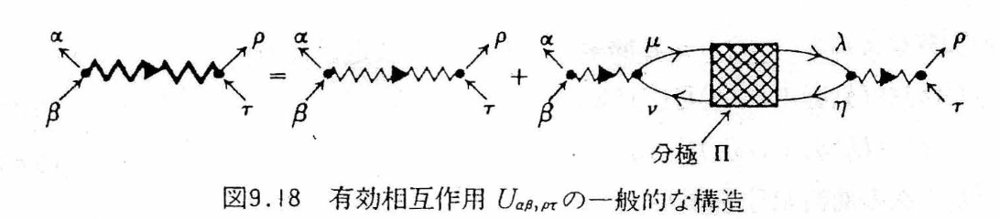
As with the self-energy, we distinguish the improper polarization, which splits into two when one wavy line is cut, from the proper polarization $\Pi^\star$, which does not split (Figure C.19). We then obtain the Dyson equation for $U$ (Figure C.20, Japanese edition, Eq. (9.40)):
$$ \begin{equation} U(q)_{\alpha\beta,\rho\tau}=U_0(q)_{\alpha\beta,\rho\tau}+U_0(q)_{\alpha\beta,\mu\nu}\,\Pi^\star_{\mu\nu,\eta\lambda}(q)\,U(q)_{\eta\lambda,\rho\tau}. \label{eq:C-FW940} \end{equation} $$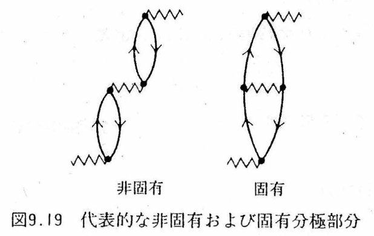
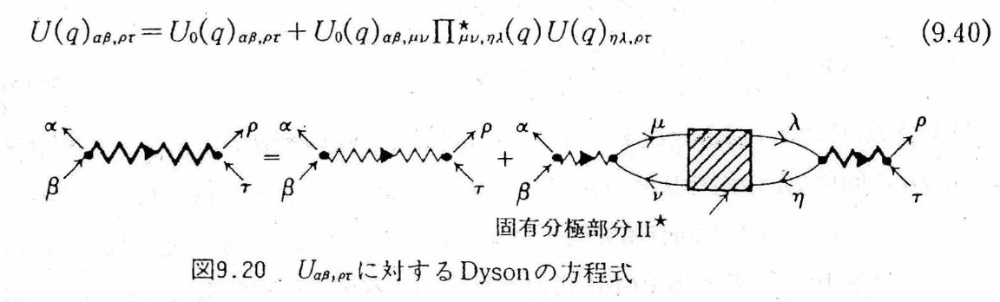
When there is no spin dependence, Eq. \eqref{eq:C-FW940} can be solved as $U(q)=U_0(q)/[1-U_0(q)\Pi^\star(q)]$. The approximation that replaces $\Pi^\star$ by the lowest-order single loop $\Pi^0$ (the loop in Figure C.12(e)) is the RPA (random-phase approximation), and the result is
$$ \begin{equation} U^{\rm RPA}(\qq,\omega)=\frac{U_0(\qq)}{1-U_0(\qq)\Pi^0(\qq,\omega)}\equiv\frac{U_0(\qq)}{\epsilon^{\rm RPA}(\qq,\omega)} \label{eq:C-RPA} \end{equation} $$whose denominator is the dielectric function $\epsilon(\qq,\omega)=1-v(q)\chi^0(\qq,\omega)$ of Chapters 9–11 ($\Pi^0$ and the Lindhard function $\chi^0$ are the same thing apart from the conventions for $\hbar$ and the sign; see Chapter 10). In other words, in the language of Feynman diagrams, the screening and plasmons treated in Part IV are “the sum over an infinite number of particle–hole loops inserted into the wavy line.” That the type-(e) diagram diverged for the Coulomb interaction (Section C.5.2) was because this infinite sum had been cut off partway; if we collect it into the form of Eq. \eqref{eq:C-RPA}, then $U^{\rm RPA}\to U_0/\epsilon$ is finite as $q\to0$ (the interaction is screened).
C.8 The GW Approximation and the Vertex Correction $\Sigma=\ii GW\Gamma$
C.8.1 Hedin's five equations
Combining Sections C.6 and C.7, we can build a closed system of equations in which “the solid lines are dressed into $G$, the wavy lines are dressed into $W$ (the screened interaction; this is the $U$ of Section C.7, which from here on we write $W$ following the convention of solid-state physics), and $\Sigma$ is written in terms of $G$ and $W$.” Hedin (1965) organized this system. In this section, following convention, we set $\hbar=1$, abbreviate $1\equiv(\xx_1,t_1)$ and $\int\dd(3)\equiv\int\dd^3x_3\dd t_3$, and write the proper self-energy simply as $\Sigma$.
$$ \begin{equation} \begin{aligned} \Sigma(1,2)&=\ii\int\!\dd(34)\,G(1,3)\,W(1^+,4)\,\Gamma(3,2;4) &&\text{(self-energy)}\\ W(1,2)&=v(1,2)+\int\!\dd(34)\,v(1,3)\,P(3,4)\,W(4,2) &&\text{(screened interaction; same as Eq. \eqref{eq:C-FW940})}\\ P(1,2)&=-\ii\int\!\dd(34)\,G(1,3)\,G(4,1^+)\,\Gamma(3,4;2) &&\text{(proper polarization)}\\ \Gamma(1,2;3)&=\delta(1,2)\delta(1,3)+\int\!\dd(4567)\,\frac{\delta\Sigma(1,2)}{\delta G(4,5)}\,G(4,6)\,G(7,5)\,\Gamma(6,7;3) &&\text{(vertex function)}\\ G(1,2)&=G^0(1,2)+\int\!\dd(34)\,G^0(1,3)\,\Sigma(3,4)\,G(4,2) &&\text{(Dyson equation; Eq. \eqref{eq:C-Dyson})} \end{aligned} \label{eq:C-Hedin} \end{equation} $$These five equations are exact (we have merely rearranged the perturbation expansion and discarded nothing). The only newcomer is the vertex function $\Gamma(1,2;3)$. In terms of diagrams, $\Gamma$ is the sum of all the corrections attached around “the point where a wavy line is attached to a solid line (the vertex)”—diagrams in which the solid and wavy lines become further entangled right near the vertex.
C.8.2 The GW approximation: $\Gamma=1$
Setting $\Gamma(1,2;3)\simeq\delta(1,2)\delta(1,3)$ (the bare vertex) is the GW approximation. We then obtain
$$ \begin{equation} \Sigma^{GW}(1,2)=\ii\,G(1,2)\,W(1^+,2),\qquad P^{\rm RPA}(1,2)=-\ii\,G(1,2)\,G(2,1^+). \label{eq:C-GW} \end{equation} $$Let us translate this into diagrams. Substituting $W=v+vPv+vPvPv+\cdots$ into $\Sigma=\ii GW$, the first term $\ii Gv$ is the exchange (Fock) term, the second term $\ii G\,vP^0v$ is Figure C.12(e) (the exchange term with one loop inserted into the wavy line), the third term has two loops, and so on. That is,
Physical Story: What happens in Figure C.12(e) (= Figure C.11(i))
To see intuitively why this diagram is called the “seed of GW,” we write it down in one particular time ordering (in reality, as in Section C.2, all the orderings are integrated over).
- The added electron hands momentum $\qq$ and energy $\hbar\omega$ to the electron sea (the wavy line).
- An electron that was below the Fermi surface is excited above the Fermi surface.
- A hole is left at the original place. At this point one particle–hole pair has been created.
- The particle–hole pair = polarization cloud propagates for a while (the two solid lines of the loop).
- The particle and the hole recombine and return $(\qq,\omega)$ (the second wavy line).
- The reaction to this comes back to the original electron.
This one round trip is $v\,\Pi^0\,v$. If the same thing happens twice, three times, …, we get $v\Pi^0v\Pi^0v,\ \dots$, and summing everything gives $W=v/(1-v\Pi^0)$, that is, the screened interaction. The screening that we solved self-consistently in Chapters 9–11 (“when we bring in a charge from outside, the electrons are pushed away, and the displaced electrons create a new field, which …”) is, in the language of diagrams, this infinite sum. Since Steps 2–3 can create real final states, $\Im\Sig\neq0$ in the region allowed by energy conservation, and it is here that a lifetime first arises (item 3 of Section C.6.5).
The GW approximation = the exchange term with its wavy line replaced by the screened interaction $W$, into which an infinite number of particle–hole loops (rings) have been inserted. It is also called “screened exchange.” Of the six terms of Figure C.12, it sums (e) to infinite order and discards (f) (the crossed exchange).
The Hartree–Fock exchange term uses the bare Coulomb interaction $v(q)=4\pi e^2/q^2$, so it suffers from well-known pathologies, such as the density of states going logarithmically to zero at the Fermi surface of a metal. GW cures this with $W=v/\epsilon$ and reproduces the band gaps of semiconductors and insulators to within about 10% of the experimental values. In practice there are the following levels (following the VASP wiki, “Practical guide to GW calculations”):
| Name | What is made self-consistent | Features |
|---|---|---|
| $G_0W_0$ | Nothing (construct $G_0$ and $W_0$ once from the density functional theory (DFT) orbitals and eigenvalues) | Cheapest. Dependence on the starting point (local density approximation (LDA)/PBE/hybrid) remains. The quasiparticle equation is solved by the linearization in Eq. \eqref{eq:C-QPlin} |
| $GW_0$ | Update only the eigenvalues of $G$; keep $W$ fixed | The gap opens slightly. Known empirically to come closest to experiment for many semiconductors |
| $GW$ (eigenvalue self-consistent) | Update the eigenvalues of $G$ and $W$ | The screening in $W$ weakens, and the gap tends to be overestimated (the inconsistency of $\Gamma=1$ becomes manifest, Section C.8.4) |
| QP$GW$ / QP$GW_0$, QSGW | In addition to the eigenvalues, update the orbitals with the quasiparticle Hamiltonian | The starting-point dependence disappears. The convention of setting the $Z$ factor to 1 ($Z$–$\Gamma$ cancellation of Section C.8.4). The quasiparticle self-consistent GW method (QSGW) of Kotani et al. is described in detail in Chapter 14 |
| $GW\Gamma$ (with vertex correction) | Include the effect of $\Gamma\neq1$ in $P$ and $\Sigma$ | Put the electron–hole interaction into $W$ through the time-dependent density functional theory (TDDFT) kernel $f_{xc}$ (the TC-TC method, etc.). The absolute energies move (Section C.8.4) |
C.8.3 The quasiparticle equation and the $Z$ factor
In $G_0W_0$ we start from the DFT Kohn–Sham eigenvalues $\epsilon_i$ and orbitals $\phi_i$ and solve the quasiparticle equation in which $V_{xc}$ is replaced by $\Sigma$. Taylor-expanding the diagonal element of $\Sigma(\omega)$ around $\omega=\epsilon_i$ gives
$$ \begin{equation} G\simeq\frac{\ket{\phi_i}\bra{\phi_i}}{\omega-\epsilon_i-\big[\Sigma_{ii}(\omega)-V_{xc,ii}\big]} \;\longrightarrow\; \epsilon_i^{\rm QP}=\epsilon_i+Z_i\big[\Sigma_{ii}(\epsilon_i)-V_{xc,ii}\big],\qquad Z_i=\Big[1-\frac{\partial\,\mathrm{Re}\,\Sigma_{ii}}{\partial\omega}\Big|_{\epsilon_i}\Big]^{-1}. \label{eq:C-QPlin} \end{equation} $$This is the practical version of Eq. \eqref{eq:C-QPeq}. For typical $sp$ semiconductors and simple metals, $Z_i$ is about $0.6\sim0.8$, which means that $20\sim40\%$ of the weight of the quasiparticle peak flows into plasmon satellites.
C.8.4 What is the vertex correction $\Gamma$, and why is it needed?
Let us begin with the physical meaning of $\Gamma$. The “vertex where $W$ attaches to a solid line” in $\Sigma=\ii GW\Gamma$ is the point at which the added electron polarizes the surrounding electron gas (creates a particle–hole pair) and interacts with that polarization. $\Gamma=1$ is the approximation that “the electron that created the polarization and the resulting particle–hole pair subsequently behave independently of each other.” In reality, the electron and the hole attract each other (the excitonic effect), and electrons avoid one another because of the Pauli principle. $\Gamma$ collects all of these additional interactions that occur near the vertex, and its lowest-order contributions are Figure C.12(f) (on the self-energy side) and the right panel of Figure C.19 (on the polarization side).
Why can it sometimes not be omitted? We give four reasons.
Reason 1: Consistency of the system of equations (Ward identity)
The fourth equation of Eq. \eqref{eq:C-Hedin} demands $\Gamma\neq1$, through $\Gamma=1+(\delta\Sigma/\delta G)GG\Gamma$, the moment $\Sigma$ is fixed by some approximation. Setting $\Sigma=\ii GW$ and yet $\Gamma=1$ amounts to using a vertex that contradicts the $\Sigma$ one has chosen. This contradiction shows up as a violation of the Ward identity, which expresses the charge conservation law (the continuity equation, Appendix B, Section B.7). As a consequence, a GW in which $G$ is dressed self-consistently unduly weakens and broadens the plasmons in $W$ and ends up worsening the bandwidth and the spectrum (Holm–von Barth 1998).
Reason 2: Cancellation between the $Z$ factor and $\Gamma$ — Why is the “bare” $G_0$ good enough for $G_0W_0$?
The interacting $G$ can be written as $G\simeq Z\,G_{\rm QP}+G_{\rm incoh}$ (Eq. \eqref{eq:C-QP}). On the other hand, the Ward identity shows that the vertex function near the Fermi surface is $\Gamma\simeq1/Z$ ($\Gamma$ is related to the $\omega$ derivative of $G^{-1}$, and $\partial G^{-1}/\partial\omega=1/Z$). Therefore
$$ \Sigma=\ii\,GW\Gamma\simeq\ii\,(Z\,G_{\rm QP})\,W\,\Big(\frac1Z\Big)=\ii\,G_{\rm QP}W . $$If we dress $G$ and thereby bring in $Z$, we must bring in $\Gamma\simeq1/Z$ at the same time. If we bring in both, they cancel, and we end up back at “a quasiparticle Green's function of weight 1 with the bare vertex.” This is the justification for using the $Z=1$ Green's function in $G_0W_0$ and QP$GW$, and conversely it is also the reason why “making only $G$ self-consistent while keeping $\Gamma=1$” leads to the deterioration described in Reason 1 (Mahan–Sernelius 1989; Del Sole–Reining–Godby 1994).
Reason 3: Vertex correction on the polarization side = electron–hole interaction (excitonic effect)
The $\Gamma$ in $P=-\ii GG\Gamma$ generates ladder diagrams in which the electron and the hole interact inside the particle–hole loop (the right panel of Figure C.19 is the lowest order). The excitonic peak in the optical absorption spectrum does not appear without this (the Bethe–Salpeter equation). Moreover, the electron–hole attraction also acts on the screening in $W$ itself. Eigenvalue-self-consistent GW overestimates the gap because the screening in $W$ is too weak; if the electron–hole interaction (the vertex correction) is introduced into $W$ through $f_{xc}$, the gap returns to the experimental value (Shishkin–Marsman–Kresse 2007).
Reason 4: The band gap is rescued by cancellation, but the absolute energies are not
The vertex correction on the $\Sigma$ side and that on the $P$ side tend to move the valence band and the conduction band in the same direction, so their net effect on the gap is small (about $0.1\,\mathrm{eV}$; Del Sole–Reining–Godby 1994). This is one of the reasons why “GW gives good band gaps.” However, absolute positions such as the ionization potential, the electron affinity, and the band alignment do not benefit from the cancellation, and they shift by about $0.5\,\mathrm{eV}$ when the vertex correction is included (Grüneis–Kresse–Hinuma–Oba 2014). This cannot be ignored when discussing band offsets at semiconductor interfaces or the band-edge positions of photocatalysts.
Caution: A “crossing” of wavy lines does not mean that the past and the future interacted
In Figure C.12(f) (= Figure C.11(j)), two wavy lines are drawn crossing each other. This must not be read as “an interaction across time.” All that the crossing represents is the order in which the lines are connected: an external line emits a wavy line $q$, then emits $q'$, then absorbs the earlier-emitted $q$ first, and finally absorbs $q'$—if we connect the lines in this order, the two wavy lines cross on the paper. That is all there is to it.
Physically, because identical fermions cannot be given name tags, there are multiple histories that track “which interaction occurred with which electron,” and these interfere as quantum amplitudes that carry signs. No matter how many times we repeat the operation of inserting polarization loops into a wavy line, as in Figure C.12(e), we cannot build this crossed diagram. That is precisely why it is missed when $\Gamma=1$ (the bare vertex) and becomes the first nontrivial correction $\Gamma^{(1)}$ to $\Gamma$. This is what is meant by the “seed of the vertex correction.”
To summarize, the vertex correction is the “$\Gamma$ in $\Sigma=\ii GW\Gamma$”: all the diagrams of the type in Figure C.12(f) (crossed exchange) and of the type in the right panel of Figure C.19 (ladder), squeezed into that single letter. GW is the approximation that throws them away; it suffices to keep distinct in mind the reasons why it is fine to throw them away (the $Z$–$\Gamma$ cancellation, the cancellation in the gap) and the situations in which throwing them away causes trouble (self-consistent treatment, excitons, absolute energies).
C.9 Working Through the Anharmonic Oscillator by Hand — First- and Second-Order Perturbation Theory for $\lambda\hat x^N$
In Section C.1.4, we brought up the anharmonic oscillator as an example of a system in which “renormalization occurs but no lifetime arises.” There we quoted only the diagonal elements of $\hat x^4$ as a result; in this section we write out the method of calculation itself through to the end, for $N=3,4,5,6$. There are three reasons.
- The tools we have been using in this appendix—the creation and annihilation operators, Wick's theorem, and the idea of “counting paths”—can all be used as they are in a system with one degree of freedom. As a practice ground before we enter many-body systems, nothing could be better.
- The perturbation theory for $\lambda\hat x^N$ is a classic example that Feynman treated in “Statistical Mechanics.” In fact, $\lambda\hat x^3$ is a “zero-dimensional field theory” with a three-point vertex, and $\lambda\hat x^4$ is one with a four-point vertex; the paths we count here are none other than the minimal version of the Feynman diagrams we counted in Sections C.3–C.5.
- The calculation can be completed entirely by hand. In many-body systems, computing $\Sig$ requires numerical calculation, but here an exact solution comes out with pencil and paper. You can check for yourself whether your own calculation is correct.
C.9.1 Setup — what are we computing?
We add an $N$th-order anharmonic term to the harmonic oscillator:
$$ \begin{equation} \Ham=\underbrace{\frac{\hat p^2}{2m}+\frac{m\omega^2}{2}\hat x^2}_{\Ham_0}+\underbrace{\lambda\hat x^N}_{\Ham'}, \qquad N=3,4,5,6. \label{eq:C-anh-H} \end{equation} $$The eigenvalues and eigenstates of $\Ham_0$ are known: $\Ham_0\ket{\phi_n}=E_n^{(0)}\ket{\phi_n}$ with $E_n^{(0)}=(n+\tfrac12)\hbar\omega$. Using the creation and annihilation operators, we write
$$ \begin{equation} \hat x=x_0\,(\hat a+\hat a^\dagger)\equiv x_0\hat A,\qquad x_0\equiv\sqrt{\frac{\hbar}{2m\omega}}, \label{eq:C-anh-x} \end{equation} $$and hereafter we abbreviate $\hat A\equiv\hat a+\hat a^\dagger$. These are all the tools we need (Appendix B, Section B.2):
By Rayleigh–Schrödinger perturbation theory (no degeneracy),
$$ \begin{equation} E_n=E_n^{(0)}+\underbrace{\bra{\phi_n}\Ham'\ket{\phi_n}}_{E_n^{(1)}} +\underbrace{\sum_{m\neq n}\frac{\abs{\bra{\phi_m}\Ham'\ket{\phi_n}}^2}{E_n^{(0)}-E_m^{(0)}}}_{E_n^{(2)}}+\cdots \label{eq:C-anh-RS} \end{equation} $$Since $\Ham'=\lambda x_0^N\hat A^N$ and $E_n^{(0)}-E_m^{(0)}=(n-m)\hbar\omega$, putting $m=n+k$ gives
There is only one thing left to do: find the matrix elements $\bra{\phi_{n+k}}\hat A^N\ket{\phi_n}$. Since $\hat A$ changes $n$ only by $\pm1$, $\hat A^N$ connects states only when $\abs{k}\le N$ and $N-\abs{k}$ is even. Therefore the sum terminates after a finite number of terms.
Dimensional check
Since $[x_0]=$ length and $[\lambda]=$ energy/length$^N$, $\lambda x_0^N$ is an energy. $\hat A$ is dimensionless. Because $E^{(2)}$ contains a division by $\hbar\omega$, $\lambda^2x_0^{2N}/\hbar\omega$ is again an energy. $S_N(n)$ is a dimensionless polynomial with integer coefficients.
C.9.2 Method 1: counting paths — the prototype of Feynman diagrams
Expanding $\hat A^N=(\hat a+\hat a^\dagger)^N$ gives $2^N$ terms. Each term is a choice, made $N$ times, of “$\hat a$ or $\hat a^\dagger$”; that is, it is an $N$-step path of $\pm1$ moves. By Eq. \eqref{eq:C-anh-ladder}, from level $\ell$
- going up one step ($\hat a^\dagger$) gives a factor $\sqrt{\ell+1}$,
- going down one step ($\hat a$) gives a factor $\sqrt{\ell}$ (paths that go down from $\ell=0$ vanish).
This is exactly the same idea as in Section C.3, where we called Feynman diagrams “a bookkeeping device for counting the ways of connecting lines.” Let us actually carry it out.
Derivation C.6: $\bra{\phi_n}\hat A^4\ket{\phi_n}$ from six paths
For $N=4$ and $k=0$, the paths are exactly the $\binom42=6$ ways of arranging two ups and two downs.
Adding up the factors of the individual paths gives
$$ (n+1)(n+2)+(n+1)^2+2n(n+1)+n^2+n(n-1)=6n^2+6n+3=3(2n^2+2n+1). $$∎ The result $\bra{\phi_n}(\hat a+\hat a^\dagger)^4\ket{\phi_n}=6n^2+6n+3$, which we merely quoted in Section C.1.4, has now been derived on our own.
Derivation C.7: $\bra{\phi_{n+1}}\hat A^3\ket{\phi_n}$ from three paths
For $N=3$ and $k=+1$, there are two ups and one down, giving $\binom31=3$ ways.
| Path | Level sequence | Factor |
|---|---|---|
| $++-$ | $n\to n{+}1\to n{+}2\to n{+}1$ | $\sqrt{n{+}1}\cdot\sqrt{n{+}2}\cdot\sqrt{n{+}2}=(n{+}2)\sqrt{n{+}1}$ |
| $+-+$ | $n\to n{+}1\to n\to n{+}1$ | $\sqrt{n{+}1}\cdot\sqrt{n{+}1}\cdot\sqrt{n{+}1}=(n{+}1)\sqrt{n{+}1}$ |
| $-++$ | $n\to n{-}1\to n\to n{+}1$ | $\sqrt{n}\cdot\sqrt{n}\cdot\sqrt{n{+}1}=n\sqrt{n{+}1}$ |
Total $=\big[(n{+}2)+(n{+}1)+n\big]\sqrt{n+1}=3(n+1)\sqrt{n+1}=3(n+1)^{3/2}$. ∎
Pitfall: Do not swap the order of $\hat n$ and $\hat a$
When we organize $\hat A^3$ as an operator identity, we are tempted to write the following:
$$ \hat A^3\stackrel{?}{=}\hat a^3+\hat a^{\dagger3}+(3\hat n+1)(\hat a+\hat a^\dagger)\qquad\textbf{(wrong)}. $$Since $\hat n$ and $\hat a,\hat a^\dagger$ do not commute ($[\hat n,\hat a]=-\hat a$, $[\hat n,\hat a^\dagger]=+\hat a^\dagger$), the answer changes depending on which side we put $\hat n$ on. Trying $n=0$ shows this at once. A direct calculation gives
$$ \hat A^3\ket{\phi_0}=3\ket{\phi_1}+\sqrt6\,\ket{\phi_3} $$(setting $n=0$ in Derivation C.7 gives the coefficient $3$, and three successive raising steps give $\sqrt{1\cdot2\cdot3}=\sqrt6$). The “wrong” expression above, however, gives $(3\hat n+1)\hat a^\dagger\ket{\phi_0}=(3\hat n+1)\ket{\phi_1}=4\ket{\phi_1}$. The correct identity follows by rearranging the eight terms, noting that $\hat a f(\hat n)=f(\hat n+1)\hat a$ and $f(\hat n)\hat a^\dagger=\hat a^\dagger f(\hat n+1)$:
(the third and fourth terms are Hermitian conjugates of each other). At $n=0$ we have $3\hat a^\dagger(\hat n+1)\ket{\phi_0}=3\ket{\phi_1}$, which indeed agrees.
The price of this mix-up is not small. In the wrong expression, $\bra{\phi_{n\pm1}}\hat A^3\ket{\phi_n}$ become $(3n+1)\sqrt{n{+}1}$ and $(3n+1)\sqrt{n}$, and the second-order perturbation comes out as
$$ S_3^{\text{(wrong)}}(n)=-3(4n^2+3n+1)=-(12n^2+9n+3) \quad\text{whereas}\quad S_3(n)=-(30n^2+30n+11) $$—for the ground state, $-3$ against $-11$, an error of more than a factor of three. When in doubt about the order, check by plugging in numbers at $n=0$ or $n=1$. The same holds for the calculation of $\Sig$ in many-body systems; it is the most reliable method of self-checking.
C.9.3 Method 2: normal ordering — this is Wick's theorem itself
Counting paths is reliable, but when $N$ is large it becomes tedious to handle $2^N$ paths. If only the diagonal elements are needed, there is a much faster method. We regard $\hat A$ as a field operator and use Wick's theorem (Appendix B, Section B.10, and Section C.3.1).
The “contraction” of $\hat A=\hat a+\hat a^\dagger$ is
$$ \overbrace{\hat A\,\hat A}^{\text{contraction}}\;\longrightarrow\;\bra{\phi_0}\hat A\hat A\ket{\phi_0}=\bra{\phi_0}\hat a\hat a^\dagger\ket{\phi_0}=1 $$(since the vacuum expectation value of the normal-ordered product $:\!\hat A^2\!:\,=\hat a^{\dagger2}+2\hat a^\dagger\hat a+\hat a^2$ is zero). Wick's theorem says, “Expand the product of $N$ factors of $\hat A$ into the normal-ordered term + one-pair contractions + two-pair contractions + ….” The number of ways to choose $2k$ of the $N$ factors and form $k$ pairs is $\binom{N}{2k}\times(2k-1)!!$, so
Here $(2k-1)!!=1\cdot3\cdot5\cdots(2k-1)$ and $(-1)!!\equiv1$. For example,
$$ \hat A^3=\;:\!\hat A^3\!:+\,3\hat A,\qquad \hat A^4=\;:\!\hat A^4\!:+\,6:\!\hat A^2\!:+\,3,\qquad \hat A^6=\;:\!\hat A^6\!:+\,15:\!\hat A^4\!:+\,45:\!\hat A^2\!:+\,15 . $$The numbers $3,\ 6,\ 3,\ 15,\ 45,\ 15$ are the same as the “number of ways of contracting” when we counted diagrams in Section C.4. The last $15=5!!$ in $\hat A^6$ is “the number of ways to divide six factors into three pairs”—in the many-body setting, it corresponds to the counting of vacuum bubbles.
Now we need only the diagonal elements of the normal-ordered terms. Of the terms in $:\!\hat A^{2j}\!:$, the only one that returns $\ket{\phi_n}$ to $\ket{\phi_n}$ is the $\hat a^{\dagger j}\hat a^{j}$ term; its coefficient is $\binom{2j}{j}$, and its expectation value is $\bra{\phi_n}\hat a^{\dagger j}\hat a^{j}\ket{\phi_n}=n(n-1)\cdots(n-j+1)$. Hence
The odd orders vanish because $\hat A^{2M+1}$ always switches $n$ between even and odd (parity). Carrying out the actual calculation, we obtain
| $N$ | $\bra{\phi_n}\hat A^N\ket{\phi_n}$ | $n=0$ |
|---|---|---|
| 2 | $2n+1$ | 1 |
| 3 | $0$ | 0 |
| 4 | $3(2n^2+2n+1)=6n^2+6n+3$ | 3 |
| 5 | $0$ | 0 |
| 6 | $5(2n+1)(2n^2+2n+3)=20n^3+30n^2+40n+15$ | 15 |
| 8 | $70n^4+140n^3+350n^2+280n+105$ | 105 |
The value at $n=0$ is $(N-1)!!$ ($1,3,15,105$) because $\bra{\phi_0}\hat A^N\ket{\phi_0}$ is itself “the number of ways to pair up $N$ factors”—this is the most elementary way in which Wick's theorem appears.
C.9.4 List of matrix elements
The second-order perturbation requires off-diagonal elements. Carrying out Eq. \eqref{eq:C-anh-path} mechanically, the results organize into the following neat form. A telltale feature is that the structure is such that reversing the sign of $k$ corresponds, in a sense, to $n\to-n$.
| $N$ | $k$ | Matrix element |
|---|---|---|
| 3 | $+3$ | $\sqrt{(n+1)(n+2)(n+3)}$ |
| $+1$ | $3(n+1)\sqrt{n+1}=3(n+1)^{3/2}$ | |
| $-1$ | $3n\sqrt{n}=3n^{3/2}$ | |
| $-3$ | $\sqrt{n(n-1)(n-2)}$ | |
| 4 | $+4$ | $\sqrt{(n+1)(n+2)(n+3)(n+4)}$ |
| $+2$ | $2(2n+3)\sqrt{(n+1)(n+2)}$ | |
| $0$ | $3(2n^2+2n+1)$ | |
| $-2$ | $2(2n-1)\sqrt{n(n-1)}$ | |
| $-4$ | $\sqrt{n(n-1)(n-2)(n-3)}$ | |
| 5 | $+5$ | $\sqrt{(n+1)_5}$ |
| $+3$ | $5(n+2)\sqrt{(n+1)(n+2)(n+3)}$ | |
| $+1$ | $5(2n^2+4n+3)\sqrt{n+1}$ | |
| $-1$ | $5(2n^2+1)\sqrt{n}$ | |
| $-3$ | $5(n-1)\sqrt{n(n-1)(n-2)}$ | |
| $-5$ | $\sqrt{(n)_5}$ | |
| 6 | $+6$ | $\sqrt{(n+1)_6}$ |
| $+4$ | $3(2n+5)\sqrt{(n+1)(n+2)(n+3)(n+4)}$ | |
| $+2$ | $15(n^2+3n+3)\sqrt{(n+1)(n+2)}$ | |
| $0$ | $5(2n+1)(2n^2+2n+3)$ | |
| $-2$ | $15(n^2-n+1)\sqrt{n(n-1)}$ | |
| $-4$ | $3(2n-3)\sqrt{n(n-1)(n-2)(n-3)}$ | |
| $-6$ | $\sqrt{(n)_6}$ |
The matrix elements for $k=\pm N$ (only one path goes straight up, or straight down) consist of a square root alone because there is only one path.
C.9.5 The second-order perturbation energy
Derivation C.8: The second-order perturbation for $N=3$, carried through to the end
Substitute the four entries of Table C.8 into Eq. \eqref{eq:C-anh-master}. The denominator is $-k$ (it is $-1$ for $k=+1$ and $+3$ for $k=-3$).
$$ \begin{aligned} S_3(n)&=\underbrace{\frac{9n^3}{+1}}_{k=-1}+\underbrace{\frac{9(n+1)^3}{-1}}_{k=+1} +\underbrace{\frac{n(n-1)(n-2)}{+3}}_{k=-3}+\underbrace{\frac{(n+1)(n+2)(n+3)}{-3}}_{k=+3}\\[4pt] &=9\big[n^3-(n+1)^3\big]+\tfrac13\big[n(n-1)(n-2)-(n+1)(n+2)(n+3)\big]. \end{aligned} $$We expand each term. We have $n^3-(n+1)^3=-(3n^2+3n+1)$; and from $n(n-1)(n-2)=n^3-3n^2+2n$ and $(n+1)(n+2)(n+3)=n^3+6n^2+11n+6$, the difference is $-(9n^2+9n+6)$. Hence
$$ S_3(n)=-9(3n^2+3n+1)-\tfrac13(9n^2+9n+6)=-(27n^2+27n+9)-(3n^2+3n+2)=-(30n^2+30n+11). $$∎ Therefore
$$ \begin{equation} E_n=\Big(n+\tfrac12\Big)\hbar\omega+0-\frac{\lambda^2}{\hbar\omega}\Big(\frac{\hbar}{2m\omega}\Big)^{3}\big(30n^2+30n+11\big)+O(\lambda^4). \label{eq:C-anh-N3} \end{equation} $$Since the first order vanishes, the effect of $\lambda\hat x^3$ appears for the first time at second order. This is what lies behind the statement in Section C.1.4 that “for odd powers, nothing happens until we reach second-order perturbation.”
Repeating the same procedure for $N=4,5,6$, we obtain the following.
| $N$ | $d_N(n)=\bra{\phi_n}\hat A^N\ket{\phi_n}$ | $S_N(n)$ | $S_N(0)$ |
|---|---|---|---|
| 2 | $2n+1$ | $-(2n+1)$ | $-1$ |
| 3 | $0$ | $-(30n^2+30n+11)$ | $-11$ |
| 4 | $6n^2+6n+3$ | $-2(2n+1)(17n^2+17n+21)$ $=-(68n^3+102n^2+118n+42)$ | $-42$ |
| 5 | $0$ | $-(630n^4+1260n^3+2030n^2+1400n+449)$ | $-449$ |
| 6 | $20n^3+30n^2+40n+15$ | $-(2n+1)(786n^4+1572n^3+5324n^2+4538n+3495)$ $=-(1572n^5+3930n^4+12220n^3+14400n^2+11528n+3495)$ | $-3495$ |
Let us check a well-known special case. For $N=4$ and $n=0$,
$$ E_0=\frac{\hbar\omega}{2}+\frac34\lambda\Big(\frac{\hbar}{m\omega}\Big)^2-\frac{21}{8}\frac{\lambda^2}{\hbar\omega}\Big(\frac{\hbar}{m\omega}\Big)^{3}\frac{1}{m\omega}+\cdots $$—here $3\lambda x_0^4=\tfrac34\lambda(\hbar/m\omega)^2$ and $-42\lambda^2x_0^8/\hbar\omega=-\tfrac{21}{8}\lambda^2\hbar^3/(m^4\omega^5)$, in agreement with the values in standard textbooks. The row $N=2$ is for checking: $\lambda\hat x^2$ merely shifts the frequency as $\omega^2\to\omega^2+2\lambda/m$, so expanding $E_n=(n+\frac12)\hbar\omega\sqrt{1+2\lambda/m\omega^2}$ gives $+(2n+1)\lambda x_0^2$ at first order in $\lambda$ and $-(2n+1)\lambda^2x_0^4/\hbar\omega$ at second order, in agreement with the table (Exercise C.7).
Numerical check
Set $\hbar=m=\omega=1$, and compare the ground-state energy obtained by numerically diagonalizing Eq. \eqref{eq:C-anh-H} in the harmonic-oscillator basis (400-dimensional) with the perturbative value through second order from Table C.9.
| $N$ | $\lambda$ | Numerical diagonalization | Perturbation through second order | Difference |
|---|---|---|---|---|
| 3 | 0.002 | 0.4999944998 | 0.4999945000 | $-2.3\times10^{-10}$ |
| 0.001 | 0.4999986250 | 0.4999986250 | $-1.5\times10^{-11}$ | |
| 4 | 0.002 | 0.5014896628 | 0.5014895000 | $+1.6\times10^{-7}$ |
| 0.001 | 0.5007473956 | 0.5007473750 | $+2.1\times10^{-8}$ | |
| 6 | 0.002 | 0.5035614356 | 0.5035315625 | $+3.0\times10^{-5}$ |
| 0.001 | 0.5018245795 | 0.5018203906 | $+4.2\times10^{-6}$ |
Even the $\lambda$ dependence of the residual agrees: for $N=4,6$, halving $\lambda$ reduces the difference to $1/8$ (the next order is the third), and for $N=3$ to $1/16$ (odd orders vanish by parity, so the next order is the fourth). This is the most direct evidence that the formulas are correct.
C.9.6 How to read the result — and back to the question of lifetimes
- For odd $N$ the first order vanishes. Since $\hat x^{2M+1}$ always changes the parity of the level, the diagonal elements vanish. The effect starts at second order.
- For the ground state the second order is always negative. At $n=0$ all the denominators $E_0^{(0)}-E_m^{(0)}$ in Eq. \eqref{eq:C-anh-RS} are negative, so $E_0^{(2)}\le0$ is guaranteed as a general result. The fact that all the $S_N(0)$ in Table C.9 are negative is a manifestation of this. Note also that it is independent of the sign of $\lambda$ (the factor $\lambda^2$ multiplies it).
- Renormalization occurs, but no lifetime arises. This is the claim of Section C.1.4. As long as the spectrum of $\Ham$ is discrete, no matter how high an order we go, the levels merely shift, and no quantity carrying an $\Im$ appears. This is because there is no partner (continuum) to which the added quantum could hand over its energy. In many-body systems, lifetimes arise because there is a particle–hole continuum, as we saw in Section C.1.6.
Physical Note: For odd $N$ there is a lifetime that perturbation theory cannot see
Item 3 needs a caveat. If $N$ is odd (or if $N$ is even but $\lambda<0$), the potential $\frac{m\omega^2}{2}x^2+\lambda x^N$ is unbounded below. This is because $\lambda x^N$ can be made arbitrarily negative by increasing $\abs{x}$; strictly speaking no bound state exists, and the “level” inside the well is merely a resonance that escapes through the barrier. Its width, by the WKB method, has the form
$$ \Gamma\sim \exp\!\Big(-\frac{\mathrm{const}}{\abs{\lambda}^{2/(N-2)}}\Big) $$and as $\lambda\to0$ it approaches zero faster than every power $\lambda^p$. Hence, however high an order of perturbation theory we go, $\Im E$ never appears. Indeed, this is why we omitted $N=5$ in the numerical check of Section C.9.5: for $\lambda x^5$, if we take the basis large we variationally pick up a “bottomless” state, and the numerical diagonalization itself breaks down ($N=3$ could be computed thanks to the fact that $\lambda$ was small and the barrier was far away).
Here the very theme of this appendix shows its face. A lifetime arises only where there is a continuum, and when it enters in the nonperturbative form of “tunneling,” it cannot be seen no matter how many orders of Feynman diagrams we add. Relatedly, the perturbation series of $\lambda\hat x^4$ is known to be an asymptotic series with zero radius of convergence (Bender–Wu). The coefficients grow like $p!$ at order $p$. The rapid growth of the coefficients in Table C.9 ($11,42,449,3495$) is the entrance to this. A perturbation series is not something that “gets better the more terms we add.”
Why is this included in the discussion of Feynman diagrams?
The perturbation expansion of $\lambda\hat x^N$ has exactly the same structure as a field theory in zero spatial dimensions and one time dimension. The correspondence is as follows.
| Anharmonic oscillator | Many-body system (C.3–C.8) |
|---|---|
| Contraction of $\hat A=\hat a+\hat a^\dagger$ $=1$ | Solid line $\ii G^0$ (propagator) |
| The $N$ legs of $\lambda\hat x^N$ | Vertex where wavy lines meet (a four-point vertex for $N=4$) |
| Coefficient $\binom{N}{2k}(2k-1)!!$ of the Wick expansion, Eq. \eqref{eq:C-anh-wick} | Enumeration of diagrams (symmetry factor) |
| $\bra{\phi_0}\hat A^N\ket{\phi_0}=(N-1)!!$ | Vacuum bubbles (C.4.1) |
| Sum over the intermediate states $\ket{\phi_{n+k}}$ in $E_n^{(2)}$ | Integral over the internal lines of the self-energy $\Sig$ |
| Level shift due to $E_n^{(1)}+E_n^{(2)}+\cdots$ | Renormalization by $\Re\Sig$ (Table C.1) |
In other words, what we did in this section is a “self-energy calculation for a one-level system.” The denominator $E_n^{(0)}-E_m^{(0)}$ of $E_n^{(2)}$ becomes $\omega-\omega_\kk$ in the many-body system, and the discrete sum $\sum_m$ becomes $\intk{k}$. That is the only difference. When you are at a loss looking at Eq. \eqref{eq:C-Sig2} for $\Sig$, it is a good idea to come back to this section.
C.9.7 Exercises
Exercise C.6: Constructing the matrix elements yourself
(1) Following Derivation C.6, write out the four paths for $N=4$, $k=+2$, and derive $\bra{\phi_{n+2}}\hat A^4\ket{\phi_n}=2(2n+3)\sqrt{(n+1)(n+2)}$. (2) Find the case $k=-2$ by the same method and compare with Table C.8. (3) Explain, from the number of paths, why the matrix element for $k=\pm N$ consists of only the square root. (4) Derive the identity \eqref{eq:C-anh-A3} by rearranging the eight terms. Use $\hat a f(\hat n)=f(\hat n+1)\hat a$.
Exercise C.7: Checking everything for $N=2$
$\Ham'=\lambda\hat x^2$ can be solved exactly: $\frac{m\omega^2}{2}x^2+\lambda x^2=\frac{m\tilde\omega^2}{2}x^2$, $\tilde\omega=\omega\sqrt{1+2\lambda/m\omega^2}$. (1) Expand $E_n=(n+\frac12)\hbar\tilde\omega$ in $\lambda$ and write down the first- and second-order terms. (2) Verify that they agree with the $N=2$ row of Table C.9 ($d_2=2n+1$, $S_2=-(2n+1)$). (3) Find the matrix elements of $\hat A^2$ ($k=0,\pm2$) by the path method, compute $S_2(n)$ directly from Eq. \eqref{eq:C-anh-master}, and reproduce (2).
Exercise C.8: Using the Wick expansion
(1) Apply Eq. \eqref{eq:C-anh-wick} to $N=5$ and verify that $\hat A^5=\;:\!\hat A^5\!:+10:\!\hat A^3\!:+15\hat A$. State the meaning of the coefficients $10=\binom52\cdot1$ and $15=\binom54\cdot3!!$. (2) Derive $\bra{\phi_n}\hat A^6\ket{\phi_n}=20n^3+30n^2+40n+15$ from Eq. \eqref{eq:C-anh-diag}. (3) Show that $\bra{\phi_0}\hat A^N\ket{\phi_0}=(N-1)!!$ follows from Eq. \eqref{eq:C-anh-wick}, and explain why this is the same calculation as the counting of vacuum bubbles in C.4.1. (4) Find $\bra{\phi_n}\hat A^8\ket{\phi_n}$ and compare with Table C.7.
Exercise C.9: Second-order perturbation theory and its physics
(1) For $N=4$, derive $S_4(n)=-(68n^3+102n^2+118n+42)$ from the four off-diagonal elements in Table C.8. (2) Find the level spacing $E_{n+1}-E_n$ for $N=4$ up to second order in $\lambda$, and show that for $\lambda>0$ the spacing widens with $n$ (a stiff spring). Discuss, in connection with this, the effect that the anharmonicity of molecular vibrations has on the spectrum. (3) State, from the denominator of Eq. \eqref{eq:C-anh-RS}, why $E_0^{(2)}\le0$ holds in general. (4) Discuss the relation between the rapid growth with $N$ of $S_N(0)$ in Table C.9 ($1,11,42,449,3495$) and the fact that the perturbation series is an asymptotic series.
C.10 Summary and Exercises
Summary of This Appendix
- The Green's function is the amplitude of “initial condition (add / remove a particle) → time evolution → projection.” The interaction moves the pole down from the real axis, which gives a shift of the real part = renormalization, and the imaginary part = the inverse lifetime. A continuum (in a many-body system, the particle–hole continuum) is needed for a lifetime to arise (the anharmonic oscillator has none; a level coupled to a continuum does).
- In the Fetter–Walecka diagrams, time runs vertically and space horizontally. A solid line = $G^0$ (second argument → first argument), a wavy line = the instantaneous interaction $U$ (horizontal), a loop = $(-1)$ and a spin trace, an equal-time line = the density. Note, however, that the times of the internal vertices are integrated over, and that a single line contains both particles and holes, so the vertical position is not to be taken literally.
- First order: of the six terms of Wick's theorem (Eq. \eqref{eq:C-FW91}, Figure C.2), the two that are not connected cancel against the denominator, and the remaining four combine into two diagrams (Hartree and Fock). The $1/2$ and $1/n!$ disappear through the number of relabelings.
- Second order: there are ten connected diagrams (Figure C.11). Four are $\Sig_{(1)}$ connected in series, and six make up $\Sig_{(2)}$ (Figure C.12, Eq. \eqref{eq:C-Sig2}). (e) is the seed of the ring (RPA/GW), and (f) is the seed of the vertex correction.
- The Dyson equation $G=G^0+G^0\Sig G$. The distinction between $\Sigma$ (including reducible parts) and $\Sig$ (proper). The wavy line has the same structure ($U=U_0+U_0\Pi^\star U$; in the RPA, $\Pi^\star\simeq\Pi^0$).
- Hedin's equations are exact. GW is $\Gamma=1$. Vertex corrections are understood from four viewpoints: the Ward identity, the $Z$–$\Gamma$ cancellation, excitonic effects, and absolute energies.
- What connects to experiment is the spectral function $A(\kk,\omega)=-\frac1\pi\Im G^R(\kk,\omega)$ (what ARPES sees). The density of states is obtained from it by further taking the trace and $\sum_\kk$. Since what we compute with diagrams is $G^T$, do not forget to reinterpret it as $G^R$ (directly for $T=0$; at finite temperature, by analytic continuation through the Matsubara formalism).
- $\delta(t-t')$ does not mean “for just an instant”; it means “memoryless.” The chain “local in time $\Rightarrow$ static (frequency-independent) $\Rightarrow$ real $\Rightarrow$ infinite lifetime” explains why Hartree–Fock gives no linewidth. A lifetime requires both a time-nonlocal kernel (memory) and real final states into which the system can decay.
- The anharmonic oscillator (Section C.9) is a testbed on which the whole toolkit of this appendix can be tried out with one degree of freedom. The first-order perturbation of $\lambda\hat x^N$ is given by $\bra{\phi_n}\hat A^N\ket{\phi_n}$ and the second-order perturbation by $S_N(n)$ (Table C.9); for odd $N$ the first order vanishes. The levels move (renormalization), but no lifetime appears as long as the spectrum is discrete. The tunneling width for odd $N$ is nonperturbative, and it cannot be seen at any order of perturbation theory.
Common Misconceptions and the correct readings
After reading this appendix, please remember only the right-hand column of the following table. The left-hand column lists readings over which readers (and the author) have actually stumbled.
| Reading that is easy to stumble over | Correct reading | Main text |
|---|---|---|
| A diagram is a classical trajectory of an electron (a movie in spacetime) | A diagram is a bookkeeping device that represents how the lines are connected in an integral expression. The times and positions of the internal vertices are integrated over, and a single diagram represents several time orderings at once | C.2 |
| A wavy line is a “Coulomb light ray” flying at a finite speed / it connects an electron in the past with one in the future | The bare Coulomb interaction is instantaneous ($\propto\delta(t_1-t_1')$), and the two ends of a wavy line are always at equal times. That the line is drawn slanted is a matter of drawing convenience | C.2, C.4.3 |
| The Hartree term occurs “at a certain time,” and the Fock term is an interaction between the past and the future | Both are first-order contributions of the same instantaneous interaction. The difference is not time but direct or exchange | C.4.3 |
| $\Sigma\propto\delta(t-t')$ means that “the self-energy arises only for an instant” | “At every time, it acts on the state at that instant without referring to the past history” = local in time. In Fourier space it does not depend on the frequency (static) | C.6.4 |
| Even Hartree–Fock gives a lifetime if higher orders are piled up | As long as $\Sigma_H,\Sigma_F$ are real and static, no matter how many are stacked, $\Im\Sig=0$. The levels and orbitals change, but the linewidth is $0$ | C.5.2, C.6.4 |
| The time kernel from second order on has a Gaussian-type spread, which is the “uncertainty of the self-energy” | It is a complex-valued memory kernel, not a probability distribution. It may include oscillation, sign changes, and power-law decay | C.6.5 |
| If the time kernel has a width, a lifetime arises | In addition to a width (= frequency dependence), real final states that satisfy energy conservation (the particle–hole continuum) are required. Inside the gap the lifetime is exactly infinite | C.1.5, C.6.5 |
| $-\Im G$ is the density of states as it is, and resolving it by $\kk$ gives the band diagram | $A(\kk,\omega)=-\frac1\pi\Im G^R$ is the spectral function. The density of states is obtained by further taking the trace and $\sum_\kk$. Moreover, what we compute with diagrams is $G^T$, not $G^R$ | C.1.7 |
| At low temperatures higher-order perturbation becomes uniformly stronger, and the electrons become “sticky” | By Pauli blocking, $-\Im\Sig\propto\xi^2+(\pi k_BT)^2$. Quasiparticles live longer the lower the temperature and the closer to the Fermi surface | C.1.6 |
| If the one-particle lifetime is short, the electrical resistance is large | Resistance is the relaxation of the current. A separate transport calculation that includes scattering angles, Umklapp processes, impurities, and vertex corrections is required | C.6.5 |
| The second-order reducible diagrams (a)–(d) are also new proper self-energies | If cutting one external line splits the diagram in two, it is reducible. Such diagrams are generated automatically by iterating the Dyson equation. The proper self-energy consists of the six diagrams (e)–(j) | C.5.2, C.6.1 |
| The “core of the correlation” is (e) and (f) of Figure C.11 | (e) and (f) of Figure C.12, that is, (i) and (j) of Figure C.11. Check the correspondence between the labels of the two figures in Table C.4 | C.5.2 |
| The Green's function is defined only when a perturbation is added to the unperturbed solution | It is a quantity defined exactly in the exact ground state. The perturbation expansion and the diagrams are merely one method of computing it | C.1.7 |
Exercise C.1: Wick's theorem and signs
(1) Rearrange the operator string $\hat\psi^\dagger_\lambda(x_1)\hat\psi^\dagger_\mu(x_1')\hat\psi_{\mu'}(x_1')\hat\psi_{\lambda'}(x_1)\hat\psi_\alpha(x)\hat\psi^\dagger_\beta(y)$ so that the contractions of (C) in Derivation C.3 are adjacent, and verify that the number of transpositions required is even. (2) Verify similarly that for (D) it is odd, and convince yourself of the rule “$-1$ per loop.” (3) Verify that (A) has two loops and that its sign is $+$.
Hint: Each interchange of fermion operators gives $-1$. Inside a $T$-product the order of the operators may be rearranged freely (with the appropriate sign).
Exercise C.2: The anharmonic oscillator and the continuum
(1) Show that $\bra{n}(\hat a+\hat a^\dagger)^4\ket{n}=6n^2+6n+3$. (2) Rewrite $\tilde\omega_1$ of Derivation C.1 in terms of a dimensionless quantity obtained by measuring $\lambda$ in units of $m\omega_0^2 x_0^2/x_0^4$ ($x_0\equiv\sqrt{\hbar/m\omega_0}$). (3) In the case where $\epsilon_k$ is uniformly distributed on $[-D,D]$ and $V_k=V$ (constant) in Eq. \eqref{eq:C-FA}, find $\Gamma$ and $\Delta(E)$, and verify that for $\abs{E}\ll D$ we have $\Delta\simeq0$ and $\Gamma=2\pi\abs{V}^2\rho$ ($\rho$ is the density of states). (4) In (3), when $D$ is finite, $\Delta(E)$ depends on $E$. Reproduce $\Delta(E)$ from $\Gamma(E)$ by means of the Kramers–Kronig relations (Chapter 4).
Hint: (3) $\Sigma(E)=\abs{V}^2\rho\int_{-D}^{D}\dd\epsilon/(E-\epsilon+\ii\eta)=\abs{V}^2\rho\,[\ln\abs{(E+D)/(E-D)}-\ii\pi]$ ($\abs{E}<D$).
Exercise C.3: Practice with the Feynman rules
(1) Using Definition C.2, write down (a)–(d) of Eq. \eqref{eq:C-Sig2} yourself and compare them with the equation in the main text. In particular, check the number of factors of $(-g)$ and the origin of $[G^0(p)]^2$ (when a first-order blob is inserted into an internal line, there are two $G^0$'s with the same momentum). (2) Verify that (a)–(d) of Figure C.11 correspond to the four terms of the expansion of $G^0\Sig_{(1)}G^0\Sig_{(1)}G^0$, by substituting $\Sig_{(1)}=\Sigma_H+\Sigma_x$. (3) For $V(\qq)=4\pi e^2/q^2$ in Figure C.12(e), verify that the $q\to0$ integral diverges, having the form $\int\dd q\,q^2\cdot q^{-4}\times(\text{finite})$. (4) Try drawing the diagrams of the third-order proper self-energy (one with two rings inserted, a triple rainbow, …). There is no need to count them.
Exercise C.4: The Dyson equation and quasiparticles
(1) For $\Sig(\kk,\omega)=\Delta_\kk-\ii\gamma_\kk$ (constant), transform Eq. \eqref{eq:C-Dysonk} back to $t$ and derive $\ii G(\kk,t)=\ee^{-\ii(\omega_\kk+\Delta_\kk)t}\ee^{-\gamma_\kk t}\theta(t)$ ($k>k_F$). (2) When $\Sig$ depends linearly on $\omega$, $\Sig=\Delta+a(\omega-\omega_\kk)$, show that the pole weight is $Z=1/(1-a)$, and compare with Eq. \eqref{eq:C-QPlin}. (3) Sum Eq. \eqref{eq:C-FW926} in momentum space as a geometric series and show that $\Sigma=\Sig/(1-G^0\Sig)$. Substitute this into Eq. \eqref{eq:C-Sigma} and reproduce Eq. \eqref{eq:C-Dysonk}.
Exercise C.5: GW and vertex corrections (a discussion problem)
(1) Substitute $W=v+vP^0v+vP^0vP^0v+\cdots$ into $\Sigma=\ii GW$ and draw each term in the language of Figure C.12. Which diagram appears at second order? (2) In Hedin's fourth equation, set $\Sigma\simeq\Sigma_x=\ii Gv$ (Fock) to find $\delta\Sigma/\delta G=\ii v$, and verify that inserting the first-order correction to $\Gamma$ into $\Sigma$ gives Figure C.12(f). (3) Verify that inserting the same $\Gamma$ into $P=-\ii GG\Gamma$ gives the right-hand diagram of Figure C.19. (4) For a system with $Z=0.7$, if one ignores the cancellation of Reason 2 and computes $\Sigma=\ii(ZG_{\rm QP})W$, what fraction of the magnitude of the self-energy is underestimated?
References
- A. L. Fetter and J. D. Walecka, Quantum Theory of Many-Particle Systems, McGraw-Hill, 1971; Japanese translation by Takeo Matsubara and Katsuhiko Fujii, Taryūshi-kei no Ryōshi-ron: Riron-hen [Quantum Theory of Many-Particle Systems: Theory Volume], McGraw-Hill (in Japanese), Chapter 3, Sections 7–10. The source text of this appendix. Eqs. (8.11), (9.1), (9.14), (9.15), (9.26), (9.35), (9.40) and Figures 9.1–9.20 are quoted from the same book.
- R. D. Mattuck, A Guide to Feynman Diagrams in the Many-Body Problem, 2nd ed., Dover (1992). An introduction that explains the “meaning” of the diagrams thoroughly in words. Its intuitive explanations of quasiparticles, the self-energy, and second-order diagrams underlie Sections C.1 and C.5 of this appendix.
- G. D. Mahan, Many-Particle Physics, 3rd ed., Kluwer Academic/Plenum (2000), Chapters 3, 5. Concrete calculations of the electron-gas self-energy (first-order, second-order, and RPA).
- L. Hedin, "New Method for Calculating the One-Particle Green's Function with Application to the Electron-Gas Problem", Phys. Rev. 139, A796 (1965). The original paper on Hedin's equations and the GW approximation.
- F. Aryasetiawan and O. Gunnarsson, "The GW method", Rep. Prog. Phys. 61, 237 (1998); G. Onida, L. Reining, A. Rubio, "Electronic excitations: density-functional versus many-body Green's-function approaches", Rev. Mod. Phys. 74, 601 (2002). Standard reviews of GW and the BSE. The notation for Hedin's equations follows the latter.
- VASP wiki, "GW approximation of Hedin's equations" https://vasp.at/wiki/GW_approximation_of_Hedin's_equations; "Practical guide to GW calculations" https://vasp.at/wiki/Practical_guide_to_GW_calculations. The hierarchy in Table C.5 and practical cautions.
- G. D. Mahan and B. E. Sernelius, Phys. Rev. Lett. 62, 2718 (1989); R. Del Sole, L. Reining, R. W. Godby, Phys. Rev. B 49, 8024 (1994). The cancellation between the vertex correction and the $Z$ factor, and the fact that the net effect on the gap is small.
- B. Holm and U. von Barth, Phys. Rev. B 57, 2108 (1998). Self-consistent GW worsens the spectrum.
- M. Shishkin, M. Marsman, G. Kresse, Phys. Rev. Lett. 99, 246403 (2007); A. Grüneis, G. Kresse, Y. Hinuma, F. Oba, Phys. Rev. Lett. 112, 096401 (2014). The improvement of self-consistent GW by a vertex correction to $W$, and the effect of the vertex correction on the ionization potential.
- N. E. Dahlen and R. van Leeuwen, J. Chem. Phys. 122, 164102 (2005); J. J. Phillips and D. Zgid, J. Chem. Phys. 140, 241101 (2014). The explicit expression for the second-order self-energy (GF2) and its self-consistent solution.
- G. Baym and L. P. Kadanoff, Phys. Rev. 124, 287 (1961). Approximations that satisfy conservation laws (conserving approximations) and the Ward identity.